3 Как улучшить обучение нейронных сетей
Начинающий гольфист обычно большую часть времени ставит себе базовый замах. Лишь постепенно он осваивает другие удары — учится делать чип, закручивать мяч вправо и влево, — опираясь на базовый замах и видоизменяя его. Точно так же до сих пор мы сосредоточивались на понимании алгоритма обратного распространения ошибки. Это наш «базовый замах», основа обучения в большинстве работ по нейронным сетям. В этой главе я расскажу о наборе приёмов, позволяющих улучшить нашу простейшую реализацию обратного распространения, а значит, и то, как учатся наши сети.
Среди приёмов, которые мы разберём в этой главе: более удачный выбор функции стоимости, известный как перекрёстная энтропия; четыре так называемых метода «регуляризации» (L1- и L2-регуляризация, дропаут и искусственное расширение обучающих данных), улучшающих способность сетей обобщать за пределы обучающих данных; более удачный способ инициализации весов сети; и набор эвристик, помогающих выбрать хорошие гиперпараметры сети. Кроме того, я менее подробно обзорно расскажу о нескольких других приёмах. Обсуждения в основном независимы друг от друга, так что при желании можно перескакивать вперёд. Многие из этих приёмов мы также реализуем в работающем коде и с их помощью улучшим результаты, полученные в задаче классификации рукописных цифр из главы 1.
Конечно, мы рассмотрим лишь немногие из огромного множества приёмов, разработанных для нейронных сетей. Идея в том, что лучший вход в это изобилие методов — глубокое изучение нескольких самых важных. Овладение этими важными приёмами полезно не только само по себе: оно углубит ваше понимание того, какие проблемы могут возникнуть при работе с нейронными сетями. А это хорошо подготовит вас к тому, чтобы быстро осваивать другие приёмы по мере надобности.
3.1 Функция стоимости на основе перекрёстной энтропии
Большинству из нас неприятно ошибаться. Вскоре после того как я начал учиться играть на фортепиано, я впервые выступил перед публикой. Я нервничал и начал играть пьесу на октаву ниже. Я растерялся и не мог продолжать, пока кто-то не указал мне на ошибку. Мне было очень стыдно. Но хотя ошибаться неприятно, мы быстро учимся, когда ошибаемся явно и решительно. Можете не сомневаться: в следующий раз перед публикой я играл в правильной октаве! И наоборот, когда наши ошибки менее очевидны, учимся мы медленнее.
В идеале мы надеемся и ожидаем, что нейронные сети будут быстро учиться на своих ошибках. Так ли это на практике? Чтобы ответить на этот вопрос, рассмотрим игрушечный пример — нейрон всего с одним входом:
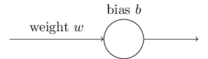
Мы научим этот нейрон до смешного простой вещи: переводить вход 1 в выход 0. Конечно, задача настолько тривиальна, что подходящие вес и смещение легко подобрать вручную, без алгоритма обучения. Тем не менее оказывается поучительным попытаться выучить вес и смещение с помощью градиентного спуска. Итак, посмотрим, как учится нейрон.
Для определённости выберу начальный вес 0.6 и начальное смещение 0.9. Это ничем не примечательные значения, просто отправная точка для обучения; я не выбирал их специально. Начальный выход нейрона равен 0.82, так что нейрону предстоит изрядно поучиться, прежде чем он приблизится к желаемому выходу 0.0. Скорость обучения \(\eta=0.15\): этого достаточно мало, чтобы мы могли проследить за происходящим, и достаточно много, чтобы за несколько секунд нейрон существенно продвинулся в обучении. Стоимость задаётся квадратичной функцией стоимости \(C\), введённой ещё в главе 1. Скоро я напомню точный вид этой функции, так что искать определение не нужно.
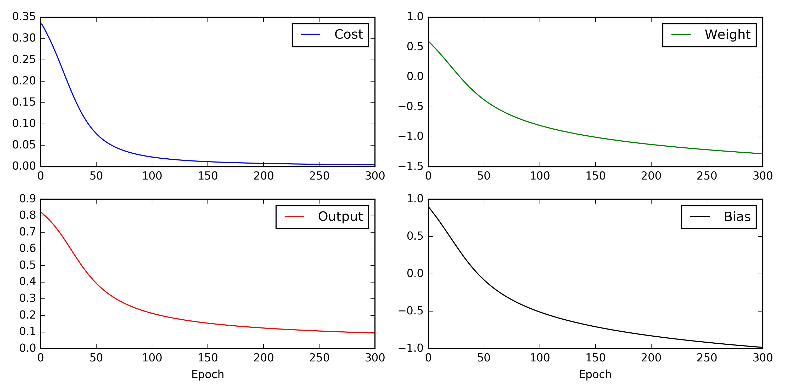
Как видите, нейрон быстро выучивает вес и смещение, снижающие стоимость, и его выход становится примерно 0.09. Это не совсем желаемый выход 0.0, но довольно близко. Предположим теперь, что и начальный вес, и начальное смещение равны 2.0. В этом случае начальный выход равен 0.98, то есть сильно ошибочен. Посмотрим, как в этом случае нейрон учится выдавать 0.
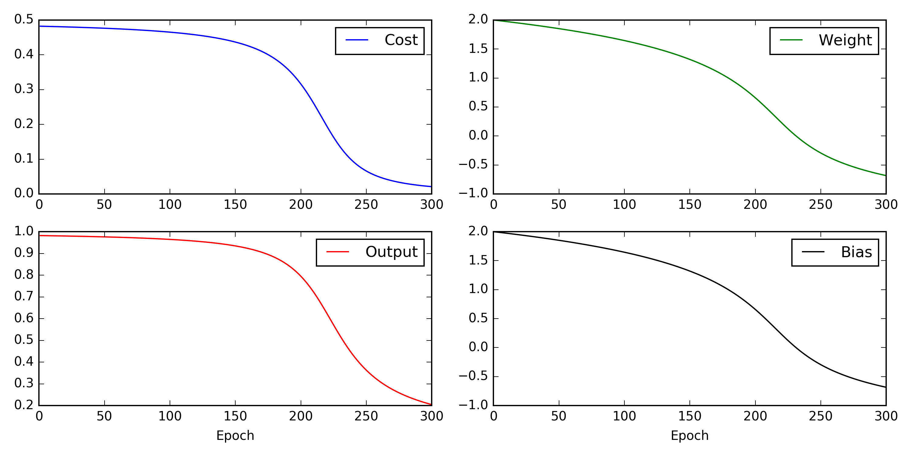
Хотя скорость обучения в этом примере та же (\(\eta=0.15\)), видно, что обучение начинается гораздо медленнее. Первые 150 или около того эпох обучения веса и смещения почти не меняются. Затем обучение набирает ход, и, как и в первом примере, выход нейрона быстро приближается к 0.0.
Такое поведение странно в сравнении с обучением человека. Как я сказал в начале раздела, мы часто учимся быстрее всего, когда сильно в чём-то ошибаемся. А мы только что увидели, что наш искусственный нейрон с большим трудом учится, когда сильно ошибается, — с гораздо большим, чем когда ошибается чуть-чуть. Более того, оказывается, такое поведение встречается не только в этой игрушечной модели, но и в сетях общего вида. Почему обучение идёт так медленно? И можно ли найти способ избежать этого замедления?
Чтобы понять источник проблемы, заметим, что наш нейрон учится, меняя вес и смещение со скоростью, определяемой частными производными функции стоимости \(\partial{}C/\partial{}w\) и \(\partial{}C/\partial{}b\). Так что сказать «обучение идёт медленно» — то же самое, что сказать, что эти частные производные малы. Задача — понять, почему они малы. Для этого вычислим частные производные. Напомню, что мы используем квадратичную функцию стоимости, которая, согласно уравнению (6), имеет вид \[C = \frac{(y-a)^2}2,\tag{54}\label{eq:54}\] где \(a\) — выход нейрона при обучающем входе \(x=1\), а \(y=0\) — соответствующий желаемый выход. Чтобы записать это явно через вес и смещение, вспомним, что \(a=\sigma{}(z)\), где \(z=wx+b\). Продифференцировав по весу и смещению с помощью цепного правила, получим \[\frac{\partial C}{\partial w} = (a-y)\sigma'(z) x = a \sigma'(z) \tag{55}\label{eq:55}\\\] \[\frac{\partial C}{\partial b} = (a-y)\sigma'(z) = a \sigma'(z), \tag{56}\label{eq:56}\] где я подставил \(x=1\) и \(y=0\). Чтобы понять поведение этих выражений, присмотримся к множителю \(\sigma{}'(z)\) в правой части. Вспомним форму функции \(\sigma{}\):
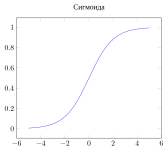
Из графика видно, что когда выход нейрона близок к 1, кривая становится очень пологой, и поэтому \(\sigma{}'(z)\) становится очень малой. Тогда уравнения (55) и (56) говорят нам, что \(\partial{}C/\partial{}w\) и \(\partial{}C/\partial{}b\) становятся очень малыми. Вот откуда берётся замедление обучения. Более того, как мы вскоре увидим, в нейронных сетях общего вида замедление обучения происходит по существу по той же причине, а не только в нашем игрушечном примере.
3.1.1 Знакомство с перекрёстной энтропией
Как справиться с замедлением обучения? Оказывается, проблему можно решить, заменив квадратичную стоимость другой функцией стоимости — так называемой перекрёстной энтропией. Чтобы разобраться в перекрёстной энтропии, немного отойдём от нашей сверхпростой игрушечной модели. Предположим, что мы обучаем нейрон с несколькими входными переменными \(x_1,x_2,\ldots\), соответствующими весами \(w_1,w_2,\ldots\) и смещением \(b\):
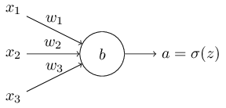
Выход нейрона, конечно, равен \(a=\sigma(z)\), где \(z=\sum_jw_jb_j+b\) — взвешенная сумма входов. Определим функцию стоимости на основе перекрёстной энтропии для этого нейрона как \[C = -\frac{1}{n} \sum_x \left[y \ln a + (1-y ) \ln (1-a) \right], \tag{57}\label{eq:57}\] где \(n\) — общее число элементов обучающих данных, сумма берётся по всем обучающим входам \(x\), а \(y\) — соответствующий желаемый выход.
Не очевидно, что выражение (57) устраняет проблему замедления обучения. Честно говоря, не очевидно даже, что эту величину разумно называть функцией стоимости! Прежде чем заняться замедлением обучения, разберёмся, в каком смысле перекрёстную энтропию можно трактовать как функцию стоимости.
Два свойства делают такую трактовку разумной. Во-первых, она неотрицательна, то есть \(C>0\). Чтобы в этом убедиться, заметим, что: (a) все отдельные слагаемые суммы в (57) отрицательны, поскольку оба логарифма берутся от чисел из диапазона от 0 до 1; и (b) перед суммой стоит знак минус.
Во-вторых, если реальный выход нейрона близок к желаемому для всех обучающих входов \(x\), то перекрёстная энтропия будет близка к нулю1. Чтобы в этом убедиться, предположим, например, что для некоторого входа \(x\) \(y=0\) и \(a\approx0\). Это случай, когда нейрон хорошо справляется с этим входом. Видно, что первое слагаемое в выражении (57) для стоимости обращается в ноль, поскольку \(y=0\), а второе равно \(-\ln(1-a)\approx0\). Аналогично при \(y=1\) и \(a\approx1\). Таким образом, вклад в стоимость будет малым, если реальный выход близок к желаемому.
Итак, перекрёстная энтропия положительна и стремится к нулю по мере того, как нейрон всё лучше вычисляет желаемый выход \(y\) для всех обучающих входов \(x\). Оба эти свойства мы интуитивно ожидаем от функции стоимости. Впрочем, оба свойства выполняются и для квадратичной стоимости. Так что для перекрёстной энтропии это хорошая новость. Но у функции стоимости на основе перекрёстной энтропии есть преимущество: в отличие от квадратичной стоимости, она позволяет избежать проблемы замедления обучения. Чтобы убедиться в этом, вычислим частную производную перекрёстной энтропии по весам. Подставим \(a=\sigma(z)\) в (57) и дважды применим цепное правило: \[\frac{\partial C}{\partial w_j} = -\frac{1}{n} \sum_x \left( \frac{y }{\sigma(z)} -\frac{1-y}{1-\sigma(z)} \right) \frac{\partial \sigma}{\partial w_j} = -\frac{1}{n} \sum_x \left( \frac{y}{\sigma(z)} -\frac{1-y}{1-\sigma(z)} \right)\sigma'(z) x_j. \tag{59}\label{eq:59}\]Приведя всё к общему знаменателю и упростив, получим: \[\frac{\partial C}{\partial w_j} = \frac{1}{n} \sum_x \frac{\sigma'(z) x_j}{\sigma(z) (1-\sigma(z))} (\sigma(z)-y). \tag{60}\label{eq:60}\] Используя определение сигмоиды \(\sigma(z)=1/(1+e^{-z})\) и немного алгебры, можно показать, что \(\sigma'(z)=\sigma(z)(1-\sigma(z))\). Я попрошу вас проверить это в упражнении ниже, а пока примем это как данность. Видно, что множители \(\sigma'(z)\) и \(\sigma(z)(1-\sigma(z))\) в только что выписанном уравнении сокращаются, и оно упрощается до \[\frac{\partial C}{\partial w_j} = \frac{1}{n} \sum_x x_j(\sigma(z)-y). \tag{61}\label{eq:61}\] Это красивое выражение. Оно говорит, что скорость обучения веса определяется величиной \(\sigma(z)-y\), то есть ошибкой на выходе. Чем больше ошибка, тем быстрее учится нейрон. Именно этого мы интуитивно и ожидали бы. В частности, оно позволяет избежать замедления обучения, вызванного множителем \(\sigma'(z)\) в аналогичном уравнении для квадратичной стоимости, уравнении (55). При использовании перекрёстной энтропии множитель \(\sigma'(z)\) сокращается, и нам больше не нужно беспокоиться о том, что он мал. Это сокращение — маленькое чудо, которое обеспечивает функция стоимости на основе перекрёстной энтропии. На самом деле никакое это не чудо. Как мы увидим позже, перекрёстная энтропия была специально выбрана так, чтобы обладать этим свойством.
Аналогично можно вычислить частную производную по смещению. Не буду снова проходить все детали, но вы легко можете проверить, что \[\frac{\partial C}{\partial b} = \frac{1}{n} \sum_x (\sigma(z)-y). \tag{62}\label{eq:62}\] И снова это позволяет избежать замедления обучения, вызванного множителем \(\sigma'(z)\) в аналогичном уравнении для квадратичной стоимости, уравнении (56).
3.1.1.1 Упражнение
Проверьте, что \(\sigma'(z) = \sigma(z)(1-\sigma(z))\)
Вернёмся к игрушечному примеру, с которым мы экспериментировали раньше, и посмотрим, что происходит, если вместо квадратичной стоимости использовать перекрёстную энтропию. Чтобы сориентироваться, начнём со случая, когда квадратичная стоимость работала прекрасно, — с начальным весом 0.6 и начальным смещением 0.9:
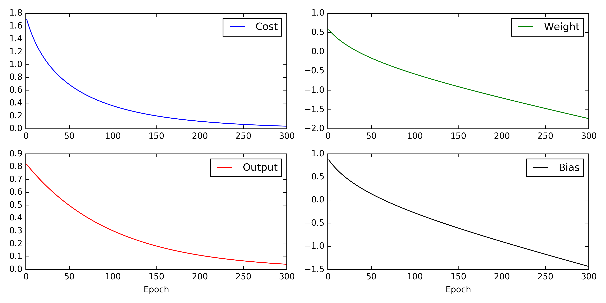
Неудивительно, что в этом случае нейрон учится отлично, как и прежде. А теперь посмотрим на случай, где раньше нейрон застревал, — когда и вес, и смещение начинаются со значения 2.0:
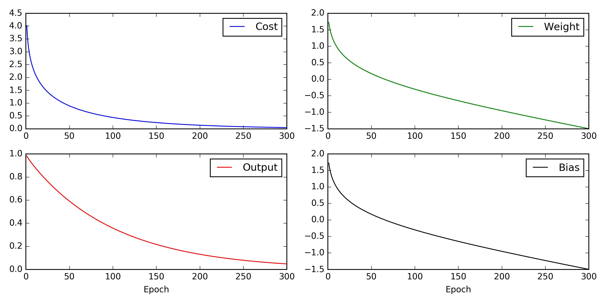
Успех! На этот раз нейрон учится быстро, как мы и надеялись. Если присмотреться, видно, что поначалу кривая стоимости идёт гораздо круче, чем начальный пологий участок соответствующей кривой для квадратичной стоимости. Именно эту крутизну и даёт нам перекрёстная энтропия, не позволяя застрять как раз тогда, когда мы ожидали бы от нейрона самого быстрого обучения, — то есть когда нейрон поначалу сильно ошибается.
Я не сказал, какая скорость обучения использовалась в только что показанных примерах. Раньше, с квадратичной стоимостью, мы использовали \(\eta=0.15\). Надо ли было взять ту же скорость обучения в новых примерах? На самом деле при смене функции стоимости невозможно точно сказать, что значит использовать «ту же» скорость обучения; это сравнение яблок с апельсинами. Для обеих функций стоимости я просто экспериментально подбирал скорость обучения, при которой видно, что происходит. Если вам всё-таки любопытно, несмотря на мою оговорку, вот подробности: в только что приведённых примерах я использовал \(\eta=0.005\).
Можно возразить, что изменение скорости обучения лишает графики выше всякого смысла. Какая разница, как быстро учится нейрон, если скорость обучения изначально выбрана произвольно?! Это возражение упускает суть. Графики говорят не об абсолютной скорости обучения, а о том, как скорость обучения меняется. А именно: при квадратичной стоимости обучение идёт медленнее, когда нейрон однозначно ошибается, чем позже, когда нейрон приближается к правильному выходу; а при перекрёстной энтропии обучение идёт быстрее, когда нейрон однозначно ошибается. Эти утверждения не зависят от того, как задана скорость обучения.
Мы изучали перекрёстную энтропию для одного нейрона. Однако её легко обобщить на многослойные сети из многих нейронов. А именно, пусть \(y=y_1,y_2,\ldots\) — желаемые значения на выходных нейронах, то есть нейронах последнего слоя, а \(a^L_1,a^L_2,\ldots\) — фактические выходные значения. Тогда перекрёстная энтропия определяется как \[C = -\frac{1}{n} \sum_x \sum_j \left[y_j \ln a^L_j + (1-y_j) \ln (1-a^L_j) \right]. \tag{63}\label{eq:63}\] Это то же самое, что наше прежнее выражение, уравнение (57), только теперь есть \(\sum_j\) — суммирование по всем выходным нейронам. Явно выводить не буду, но должно быть правдоподобно, что выражение (63) позволяет избежать замедления обучения в сетях из многих нейронов. Если интересно, вывод можно проделать в задаче ниже.
Кстати, я использую термин «перекрёстная энтропия» так, что это смутило некоторых первых читателей, поскольку внешне это расходится с другими источниками. В частности, перекрёстную энтропию обычно определяют для двух распределений вероятностей \(p_j\) и \(q_j\) как \(\sum_jp_j\ln{}q_j\). Это определение можно связать с (57), если считать, что один сигмоидный нейрон выдаёт распределение вероятностей, состоящее из активации нейрона \(a\) и дополнения к ней \(1-a\).
Однако когда в последнем слое много сигмоидных нейронов, вектор активаций \(a^L_j\) обычно не образует распределения вероятностей. Поэтому определение вроде \(\sum_j p_j \ln q_j\) даже не имеет смысла, ведь мы работаем не с распределениями вероятностей. Вместо этого (63) можно понимать как сумму перекрёстных энтропий отдельных нейронов, где активация каждого нейрона интерпретируется как часть двухэлементного распределения вероятностей2. В этом смысле (63) — обобщение перекрёстной энтропии для распределений вероятностей.
Когда следует использовать перекрёстную энтропию вместо квадратичной стоимости? На самом деле перекрёстная энтропия почти всегда предпочтительнее, если выходные нейроны сигмоидные. Чтобы понять почему, вспомним, что при создании сети веса и смещения обычно инициализируются каким-то случайным образом. Может случиться, что из-за такого начального выбора сеть будет решительно ошибаться на каком-то обучающем входе — то есть выходной нейрон насытится около 1, хотя должен выдавать 0, или наоборот. При квадратичной стоимости это замедлит обучение. Оно не остановится совсем, поскольку веса будут продолжать учиться на других обучающих входах, но это явно нежелательно.
3.1.1.2 Упражнения
Одна ловушка с перекрёстной энтропией — поначалу бывает трудно запомнить, какую роль играют y, а какую a. Легко запутаться, правильная ли форма \[-[y \ln a + (1-y) \ln (1-a)]\] или \[-[a \ln y + (1-a) \ln (1-y)].\] Что происходит со вторым из этих выражений при \(y=0\) или 1? Страдает ли от этой проблемы первое выражение? Почему?
В начале раздела, обсуждая один нейрон, я утверждал, что перекрёстная энтропия мала, если \(\sigma(z)\approx y\) для всех обучающих входов. Рассуждение опиралось на то, что \(y\) равно либо 0, либо 1. Обычно так и бывает в задачах классификации, но в других задачах (например, в задачах регрессии) \(y\) иногда может принимать промежуточные значения между 0 и 1. Покажите, что перекрёстная энтропия по-прежнему минимальна, когда \(\sigma(z)=y\) для всех обучающих входов. В этом случае перекрёстная энтропия равна \[C = -\frac{1}{n} \sum_x [y \ln y+(1-y) \ln(1-y)]. \tag{64}\label{eq:64}\] Величину \(-\left[y \ln y+(1-y) \ln(1-y)\right]\) иногда называют двоичной энтропией.
3.1.1.3 Задачи
Многослойные сети из многих нейронов. В обозначениях, введённых в прошлой главе, покажите, что для квадратичной стоимости частная производная по весам выходного слоя равна \[\frac{\partial C}{\partial w^L_{jk}} = \frac{1}{n} \sum_x a^{L-1}_k (a^L_j-y_j) \sigma'(z^L_j). \tag{65}\label{eq:65}\] Множитель \(\sigma'(z^L_j)\) вызывает замедление обучения всякий раз, когда выходной нейрон насыщается на неправильном значении. Покажите, что для перекрёстной энтропии ошибка выходного слоя \(\delta^L\) для одного обучающего примера \(x\) равна \[\delta^L = a^L - y.\tag{66}\label{eq:66}\] С помощью этого выражения покажите, что частная производная по весам выходного слоя равна \[\frac{\partial C}{\partial w^L_{jk}} = \frac{1}{n} \sum_x a^{L-1}_k (a^L_j-y_j). \tag{67}\label{eq:67}\] Множитель \(\sigma'(z^L_j)\) исчез, так что перекрёстная энтропия позволяет избежать проблемы замедления обучения не только для одного нейрона, как мы видели раньше, но и в многослойных сетях из многих нейронов. Простой вариант этого анализа годится и для смещений. Если это для вас неочевидно, проделайте и этот анализ.
Квадратичная стоимость при линейных нейронах в выходном слое. Пусть у нас многослойная сеть из многих нейронов. Пусть все нейроны последнего слоя — линейные, то есть сигмоидная функция активации к ним не применяется, и их выходы равны просто \(a^L_j=z^L_j\). Покажите, что при квадратичной функции стоимости ошибка выходного слоя \(\delta^L\) для одного обучающего примера \(x\) равна \[\delta^L = a^L-y. \tag{68}\label{eq:68}\] Как и в предыдущей задаче, с помощью этого выражения покажите, что частные производные по весам и смещениям выходного слоя равны \[\frac{\partial C}{\partial w^L_{jk}} = \frac{1}{n} \sum_x a^{L-1}_k (a^L_j-y_j)\tag{69}\label{eq:69}\] \[\frac{\partial C}{\partial b^L_{j}} = \frac{1}{n} \sum_x (a^L_j-y_j). \tag{70}\label{eq:70}\] Это показывает, что если выходные нейроны линейные, то квадратичная стоимость не приводит ни к каким проблемам с замедлением обучения. В этом случае квадратичная стоимость — вполне подходящая функция стоимости.
3.1.2 Классификация цифр MNIST с помощью перекрёстной энтропии
Перекрёстную энтропию легко реализовать в программе, которая учится
градиентным спуском и обратным распространением. Мы сделаем это дальше в
главе, написав улучшенную версию нашей прежней программы классификации
рукописных цифр MNIST, network.py. Новая программа
называется network2.py и включает не только перекрёстную
энтропию, но и несколько других приёмов из этой главы3. А
пока посмотрим, насколько хорошо новая программа классифицирует цифры
MNIST. Как и в главе 1, используем сеть с 30 скрытыми нейронами и размер
мини-пакета 10. Скорость обучения зададим \(\eta=0.5\)4 и
будем обучать сеть 30 эпох. Интерфейс network2.py немного
отличается от network.py, но происходящее должно быть
понятно. Кстати, документацию по интерфейсу network2.py
можно получить командами вроде help(network2.Network.SGD) в
интерактивной оболочке Python.
>>> import mnist_loader
>>> training_data, validation_data, test_data = mnist_loader.load_data_wrapper()
>>> import network2
>>> net = network2.Network([784, 30, 10], cost=network2.CrossEntropyCost)
>>> net.large_weight_initializer()
>>> net.SGD(training_data, 30, 10, 0.5, evaluation_data=test_data, monitor_evaluation_accuracy=True)Кстати, обратите внимание: команда
net.large_weight_initializer() инициализирует веса и
смещения так же, как описано в главе 1. Её нужно выполнить, поскольку
дальше в этой главе мы изменим способ инициализации весов по умолчанию.
В результате выполнения этих команд получается сеть с точностью 95.49
процента. Это довольно близко к результату, полученному в главе 1 с
квадратичной стоимостью, — 95.42 процента.
Посмотрим также на случай со 100 скрытыми нейронами и перекрёстной энтропией при прочих равных параметрах. В этом случае точность составляет 96.82 процента. Это существенное улучшение по сравнению с главой 1, где с квадратичной стоимостью мы получили точность классификации 96.59 процента. Изменение может показаться небольшим, но заметьте, что доля ошибок упала с 3.41 до 3.18 процента. То есть мы устранили примерно каждую четырнадцатую из исходных ошибок. Весьма ощутимое улучшение.
Обнадёживает, что перекрёстная энтропия даёт такие же или лучшие результаты, чем квадратичная стоимость. Однако эти результаты не доказывают окончательно, что перекрёстная энтропия — лучший выбор. Дело в том, что я приложил совсем немного усилий к выбору гиперпараметров — скорости обучения, размера мини-пакета и так далее. Чтобы улучшение было по-настоящему убедительным, нужно было бы тщательно оптимизировать эти гиперпараметры. И всё же результаты обнадёживают и подкрепляют наше прежнее теоретическое рассуждение о том, что перекрёстная энтропия — лучший выбор, чем квадратичная стоимость.
Это, кстати, часть общей закономерности, которую мы будем наблюдать на протяжении всей главы, да и большей части книги. Мы разрабатываем новый приём, пробуем его и получаем «улучшенные» результаты. Конечно, приятно видеть такие улучшения. Но их интерпретация всегда проблематична. По-настоящему убедительны они лишь тогда, когда улучшение видно после огромных усилий по оптимизации всех остальных гиперпараметров. Это большая работа, требующая больших вычислительных мощностей, и обычно мы не будем проводить столь исчерпывающее исследование. Вместо этого мы будем опираться на неформальные проверки вроде приведённых выше. Но стоит помнить, что такие проверки не являются окончательным доказательством, и сохранять бдительность к признакам того, что рассуждения перестают работать.
Мы уже очень подробно обсудили перекрёстную энтропию. Зачем столько усилий, если она даёт лишь небольшое улучшение результатов на MNIST? Дальше в главе мы увидим другие приёмы — в первую очередь регуляризацию, — дающие гораздо большие улучшения. Так почему же столько внимания перекрёстной энтропии? Отчасти потому, что это широко используемая функция стоимости, и в ней стоит хорошо разобраться. Но важнее другое: насыщение нейронов — серьёзная проблема нейронных сетей, к которой мы будем снова и снова возвращаться на протяжении книги. Поэтому я так подробно обсуждал перекрёстную энтропию: это хорошая лаборатория, чтобы начать разбираться в насыщении нейронов и способах с ним бороться.
3.1.3 Что означает перекрёстная энтропия? Откуда она берётся?
Обсуждая перекрёстную энтропию, мы сосредоточились на алгебраическом анализе и практической реализации. Это полезно, но оставляет без ответа более широкие концептуальные вопросы: что означает перекрёстная энтропия? Можно ли как-то интуитивно о ней думать? И как вообще можно было придумать перекрёстную энтропию?
Начнём с последнего вопроса: что могло бы натолкнуть нас на мысль о перекрёстной энтропии? Предположим, мы обнаружили описанное выше замедление обучения и поняли, что его источник — множители \(\sigma'(z)\) в уравнениях (55) и (56). Немного поразглядывав эти уравнения, мы могли бы задуматься: нельзя ли выбрать функцию стоимости так, чтобы множитель \(\sigma'(z)\) исчез? В этом случае стоимость \(C=C_x\) для одного обучающего примера \(x\) удовлетворяла бы уравнениям \[\frac{\partial C}{\partial w_j} = x_j(a-y) \tag{71}\label{eq:71}\] \[\frac{\partial C}{\partial b } = (a-y). \tag{72}\label{eq:72}\] Если бы удалось выбрать функцию стоимости так, чтобы эти уравнения выполнялись, они просто выражали бы интуицию: чем больше начальная ошибка, тем быстрее учится нейрон. Кроме того, они устранили бы проблему замедления обучения. Сейчас мы покажем, что, исходя из этих уравнений, можно вывести вид перекрёстной энтропии, просто следуя математическому чутью. Действительно, по цепному правилу \[\frac{\partial C}{\partial b} = \frac{\partial C}{\partial a} \sigma'(z). \tag{73}\label{eq:73}\] Используя \(\sigma'(z)=\sigma(z)(1-\sigma(z))=a(1-a)\), перепишем последнее уравнение в виде \[\frac{\partial C}{\partial b} = \frac{\partial C}{\partial a} a(1-a).\tag{74}\label{eq:74}\] Сравнивая с уравнением (72), получаем \[\frac{\partial C}{\partial a} = \frac{a-y}{a(1-a)}. \tag{75}\label{eq:75}\] Проинтегрировав это выражение по \(a\), получим \[C = -[y \ln a + (1-y) \ln (1-a)]+ {\rm const}, \tag{76}\label{eq:76}\] с некоторой константой интегрирования. Это вклад в стоимость одного обучающего примера \(x\). Чтобы получить полную функцию стоимости, нужно усреднить по обучающим примерам: \[C = -\frac{1}{n} \sum_x [y \ln a +(1-y) \ln(1-a)] + {\rm const},\tag{77}\label{eq:77}\] где константа — среднее отдельных констант для каждого обучающего примера. Итак, уравнения (71) и (72) однозначно, с точностью до общей константы, определяют вид перекрёстной энтропии. Перекрёстная энтропия — не что-то чудесным образом взятое из воздуха. Наоборот, её можно было открыть простым и естественным путём.
А как насчёт интуитивного смысла перекрёстной энтропии? Как о ней думать? Подробное объяснение увело бы нас дальше, чем мне хотелось бы. Однако стоит упомянуть, что существует стандартная интерпретация перекрёстной энтропии, пришедшая из теории информации. Грубо говоря, идея в том, что перекрёстная энтропия — мера удивления. А именно, наш нейрон пытается вычислить функцию \(x\to y=y(x)\). Но вместо неё он вычисляет функцию \(x \to a=a(x)\). Будем считать a оценкой нейроном вероятности того, что \(y\) равно 1, а \(1-a\) — оценкой вероятности того, что правильное значение \(y\) равно 0. Тогда перекрёстная энтропия измеряет, насколько мы в среднем «удивляемся», узнав истинное значение \(y\). Удивление мало, если выход соответствует ожиданиям, и велико, если выход неожиданный. Конечно, я не сказал, что именно означает «удивление», так что это, возможно, звучит как пустые слова. Но на самом деле в теории информации есть точный способ сказать, что понимается под удивлением. К сожалению, я не знаю хорошего, короткого и самодостаточного изложения этой темы, доступного в сети. Но если хотите копнуть глубже, в Википедии есть краткая сводка, с которой можно начать. А подробности можно восполнить, проработав материал о неравенстве Крафта в главе 5 книги по теории информации Ковера и Томаса.
3.1.3.1 Задача
Мы подробно обсудили замедление обучения, которое может происходить при насыщении выходных нейронов в сетях, обучаемых с квадратичной стоимостью. Ещё один фактор, способный тормозить обучение, — множитель \(x_j\) в уравнении (61). Из-за него, когда вход \(x_j\) близок к нулю, соответствующий вес \(w_j\) учится медленно. Объясните, почему множитель \(x_j\) невозможно устранить хитрым выбором функции стоимости.
3.1.4 Softmax
В этой главе для борьбы с замедлением обучения мы в основном будем использовать перекрёстную энтропию. Однако я хочу кратко описать ещё один подход к этой проблеме, основанный на так называемых слоях нейронов softmax («мягкий максимум»). В оставшейся части главы мы слои softmax использовать не будем, так что если вы очень спешите, можете перейти к следующему разделу. Однако разобраться в softmax всё же стоит — отчасти потому, что это интересно само по себе, а отчасти потому, что слои softmax понадобятся нам в главе 6 при обсуждении глубоких нейронных сетей.
Идея softmax — определить новый тип выходного слоя нейронной сети. Начинается всё так же, как в сигмоидном слое: формируются взвешенные входы5 \(z^L_j=\sum_kw^L_{jk}a^{L-1}_k+b^L_j\). Однако для получения выхода мы не применяем сигмоиду. Вместо этого в слое softmax к \(z^L_j\) применяется так называемая функция softmax. Согласно ей, активация \(a^L_j\) \(j\)-го выходного нейрона равна \[a^L_j = \frac{e^{z^L_j}}{\sum_ke^{z^L_k}} \tag{78}\label{eq:78}\] где в знаменателе суммирование идёт по всем выходным нейронам.
Если вы не знакомы с функцией softmax, уравнение (78) может показаться довольно туманным. Разумеется, не очевидно, зачем нам эта функция. И не очевидно, что она поможет справиться с замедлением обучения. Чтобы лучше понять уравнение (78), пусть у нас есть сеть с четырьмя выходными нейронами и четырьмя соответствующими взвешенными входами, которые обозначим \(z^L_1,z^L_2,z^L_3,\) и \(z^L_4\). На рис. 3.1 показан график соответствующих выходных активаций при разных входах6.
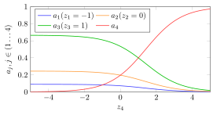
При увеличении \(z^L_4\) видно, что соответствующая выходная активация \(a^L_4\) растёт, а остальные выходные активации уменьшаются. Аналогично, если уменьшать \(z^L_4\), то \(a^L_4\) уменьшается, а все остальные выходные активации растут. Если присмотреться, видно, что в обоих случаях суммарное изменение остальных активаций в точности компенсирует изменение \(a^L_4\). Причина в том, что сумма выходных активаций гарантированно всегда равна 1, что можно доказать с помощью уравнения (78) и небольшой алгебры: \[\sum_j a^L_j = \frac{\sum_j e^{z^L_j}}{\sum_k e^{z^L_k}} = 1.\tag{79}\label{eq:79}\] Поэтому если \(a^L_4\) растёт, то остальные выходные активации должны в сумме уменьшиться на ту же величину, чтобы сумма всех активаций оставалась равной 1. И, конечно, то же верно для всех остальных активаций.
Из уравнения (78) также следует, что все выходные активации положительны, поскольку экспонента положительна. Вместе с наблюдением из предыдущего абзаца это значит, что выход слоя softmax — набор положительных чисел, в сумме дающих 1. Иными словами, выход слоя softmax можно рассматривать как распределение вероятностей.
То, что слой softmax выдаёт распределение вероятностей, весьма приятно. Во многих задачах удобно интерпретировать выходную активацию \(a^L_j\) как оценку сетью вероятности того, что правильный выход — \(j\). Например, в задаче классификации MNIST \(a^L_j\) можно интерпретировать как оценку сетью вероятности того, что правильная цифра — \(j\).
А вот если бы выходной слой был сигмоидным, мы, конечно, не могли бы считать, что активации образуют распределение вероятностей. Не буду этого явно доказывать, но должно быть правдоподобно, что активации сигмоидного слоя в общем случае не образуют распределения вероятностей. Поэтому для сигмоидного выходного слоя такой простой интерпретации выходных активаций нет.
3.1.4.1 Упражнение
Постройте пример, явно показывающий, что в сети с сигмоидным выходным слоем сумма выходных активаций \(a^L_j\) не всегда равна 1.
Мы начинаем прочувствовать функцию softmax и поведение слоёв softmax. Подведём промежуточный итог: экспоненты в уравнении (78) гарантируют, что все выходные активации положительны. А сумма в знаменателе уравнения (78) гарантирует, что выходы softmax в сумме дают 1. Так что этот конкретный вид больше не кажется таким загадочным: это естественный способ гарантировать, что выходные активации образуют распределение вероятностей. Softmax можно представлять себе как способ изменить масштаб \(z^L_j\), а затем «сжать» их вместе в распределение вероятностей.
3.1.4.2 Упражнения
Монотонность softmax. Покажите, что \(\partial a^L_j / \partial z^L_k\) положительна при \(j=k\) и отрицательна при \(j\ne k\). Отсюда следует, что увеличение \(z^L_j\) гарантированно увеличивает соответствующую выходную активацию \(a^L_j\) и уменьшает все остальные выходные активации. Мы уже видели это экспериментально на графике, но здесь требуется строгое доказательство.
Нелокальность softmax. Сигмоидные слои хороши тем, что выход \(a^L_j\) — функция соответствующего взвешенного входа: \(a^L_j=\sigma(z^L_j)\). Объясните, почему для слоя softmax это не так: любая выходная активация \(a^L_j\) зависит от всех взвешенных входов.
3.1.4.3 Задача
Обращение слоя softmax. Пусть у нас есть нейронная сеть с выходным слоем softmax, и активации \(a^L_j\) известны. Покажите, что соответствующие взвешенные входы имеют вид \(z^L_j=\ln a^L_j+C\) для некоторой константы \(C\), не зависящей от \(j\).
Проблема замедления обучения. Мы уже довольно хорошо познакомились со слоями нейронов softmax. Но пока не увидели, как слой softmax помогает справиться с замедлением обучения. Чтобы это понять, определим функцию стоимости на основе логарифмического правдоподобия. Будем обозначать через \(x\) обучающий вход сети, а через \(y\) — соответствующий желаемый выход. Тогда стоимость логарифмического правдоподобия для этого обучающего входа равна \[C \equiv -\ln a^L_y \tag{80}\label{eq:80}\] Например, если мы обучаем сеть на изображениях MNIST и подаём на вход изображение семёрки, то стоимость логарифмического правдоподобия равна \(-\ln a^L_7\). Чтобы убедиться, что это интуитивно разумно, рассмотрим случай, когда сеть хорошо справляется, то есть уверена, что на входе 7. Тогда она оценит соответствующую вероятность \(a^L_7\) значением, близким к 1, и стоимость \(-\ln a^L_7\) будет мала. А когда сеть справляется хуже, вероятность \(a^L_7\) будет меньше, а стоимость \(-\ln a^L_7\) — больше. Так что стоимость логарифмического правдоподобия ведёт себя так, как мы и ожидаем от функции стоимости.
А как с проблемой замедления обучения? Чтобы это проанализировать, вспомним, что ключ к замедлению обучения — поведение величин \(\partial C/\partial w^L_{jk}\) и \(\partial C/\partial b^L_j\). Выводить явно не буду — попрошу вас сделать это в задачах ниже, — но с помощью небольшой алгебры можно показать, что7 \[\frac{\partial C}{\partial b^L_j} = a^L_j-y_j \tag{81}\label{eq:81}\\\] \[\frac{\partial C}{\partial w^L_{jk}} = a^{L-1}_k (a^L_j-y_j)\tag{82}\label{eq:82}\] Эти уравнения совпадают с аналогичными выражениями, полученными ранее при анализе перекрёстной энтропии. Сравните, например, уравнение (82) с уравнением (67). Это одно и то же уравнение, только во втором я усреднил по обучающим примерам. И, как и в прежнем анализе, эти выражения гарантируют, что замедления обучения не будет. Вообще, выходной слой softmax со стоимостью логарифмического правдоподобия полезно считать весьма похожим на сигмоидный выходной слой со стоимостью на основе перекрёстной энтропии.
Раз они так похожи, что лучше использовать: сигмоидный выходной слой с перекрёстной энтропией или выходной слой softmax с логарифмическим правдоподобием? На самом деле во многих ситуациях оба подхода работают хорошо. В оставшейся части главы мы будем использовать сигмоидный выходной слой со стоимостью на основе перекрёстной энтропии. Позже, в главе 6, мы иногда будем использовать выходной слой softmax со стоимостью логарифмического правдоподобия. Переключаемся мы для того, чтобы некоторые наши дальнейшие сети больше походили на сети из ряда влиятельных научных статей. Если говорить о более общем принципе, softmax с логарифмическим правдоподобием стоит использовать всякий раз, когда вы хотите интерпретировать выходные активации как вероятности. Это нужно не всегда, но может быть полезно в задачах классификации (вроде MNIST) с непересекающимися классами.
3.1.4.4 Задачи
Выведите уравнения (81) и (82).
Откуда название «softmax»? Изменим функцию softmax так, чтобы выходные активации были равны \[a^L_j = \frac{e^{c z^L_j}}{\sum_k e^{c z^L_k}},\tag{83}\label{eq:83}\] где \(c\) — положительная константа. Заметьте, что \(c=1\) соответствует стандартной функции softmax. Но при другом значении \(c\) получается другая функция, качественно тем не менее весьма похожая на softmax. В частности, покажите, что выходные активации образуют распределение вероятностей, как и в обычном softmax. Пусть \(c\) становится большим, то есть \(c\to \infty\). Каково предельное значение выходных активаций \(a^L_j\)? Решив эту задачу, вы поймёте, почему функцию при \(c=1\) считают «смягчённой» версией функции максимума. Отсюда и название «softmax» — «мягкий максимум».
Обратное распространение с softmax и логарифмическим правдоподобием. В прошлой главе мы вывели алгоритм обратного распространения для сети из сигмоидных слоёв. Чтобы применить алгоритм к сети со слоем softmax, нужно найти выражение для ошибки \(\delta^L_j \equiv \partial C / \partial z^L_j\) в последнем слое. Покажите, что подходящее выражение таково: \[\delta^L_j = a^L_j -y_j. \tag{84}\label{eq:84}\] С помощью этого выражения можно применять алгоритм обратного распространения к сети с выходным слоем softmax и стоимостью логарифмического правдоподобия.
3.2 Переобучение и регуляризация
Однажды нобелевского лауреата физика Энрико Ферми спросили, что он думает о математической модели, которую несколько коллег предложили для решения важной нерешённой физической задачи. Модель прекрасно согласовывалась с экспериментом, но Ферми отнёсся к ней скептически. Он спросил, сколько в модели свободных параметров, которые можно подстраивать. «Четыре», — ответили ему. Ферми сказал8 : «Мой друг Джонни фон Нейман любил повторять: с четырьмя параметрами я могу описать слона, а с пятью — заставить его шевелить хоботом».
Смысл, конечно, в том, что модели с большим числом свободных параметров способны описать поразительно широкий круг явлений. Даже если такая модель хорошо согласуется с имеющимися данными, это ещё не делает её хорошей моделью. Возможно, это лишь значит, что в модели достаточно свободы, чтобы описать почти любой набор данных такого размера, не ухватив никакого подлинного понимания стоящего за ним явления. В таком случае модель будет хорошо работать на имеющихся данных, но не сможет обобщаться на новые ситуации. Настоящая проверка модели — её способность делать предсказания в ситуациях, с которыми она раньше не сталкивалась.
Ферми и фон Нейман с подозрением относились к моделям с четырьмя параметрами. А у нашей сети с 30 скрытыми нейронами для классификации цифр MNIST почти 24 000 параметров! Это очень много. У сети со 100 скрытыми нейронами почти 80 000 параметров, а в передовых глубоких нейронных сетях бывают миллионы и даже миллиарды параметров. Можно ли доверять их результатам?
Обострим проблему, построив ситуацию, в которой наша сеть плохо
обобщается на новые случаи. Возьмём сеть с 30 скрытыми нейронами и её
23 860 параметрами. Но обучать её будем не на всех 50 000 обучающих
изображениях MNIST, а только на первой 1000. С таким урезанным набором
проблема обобщения станет гораздо заметнее. Обучать будем так же, как
раньше: с функцией стоимости на основе перекрёстной энтропии, скоростью
обучения \(\eta=0.5\) и размером
мини-пакета 10. Однако обучать будем 400 эпох — несколько больше, чем
раньше, поскольку обучающих примеров у нас теперь гораздо меньше. С
помощью network2 посмотрим, как меняется функция
стоимости:
>>> import mnist_loader
>>> training_data, validation_data, test_data = mnist_loader.load_data_wrapper()
>>> import network2
>>> net = network2.Network([784, 30, 10], cost=network2.CrossEntropyCost)
>>> net.large_weight_initializer()
>>> net.SGD(training_data[:1000], 400, 10, 0.5, evaluation_data=test_data, monitor_evaluation_accuracy=True, monitor_training_cost=True)По результатам можно построить график изменения стоимости в ходе обучения сети9 :
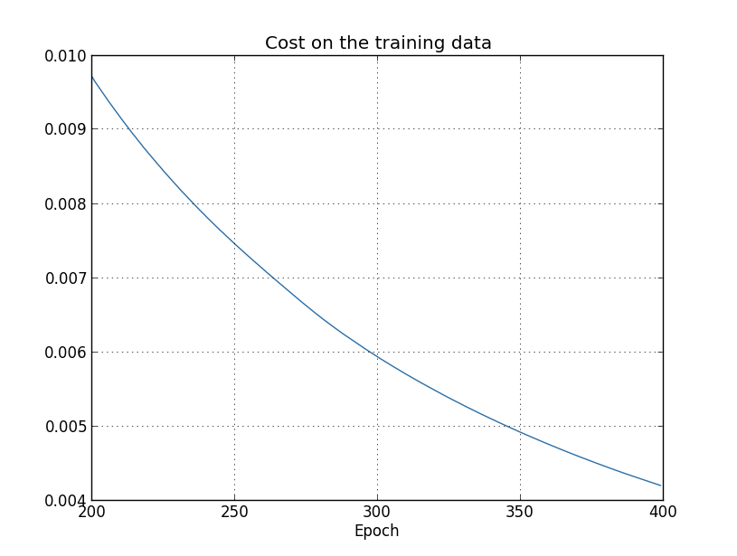
Выглядит обнадёживающе: стоимость плавно уменьшается, как мы и ожидали. Заметьте, что я показал только эпохи обучения с 200 по 399. Так мы получаем хороший крупный план поздних стадий обучения, где, как мы увидим, и происходит самое интересное.
Теперь посмотрим, как со временем меняется точность классификации на тестовых данных:
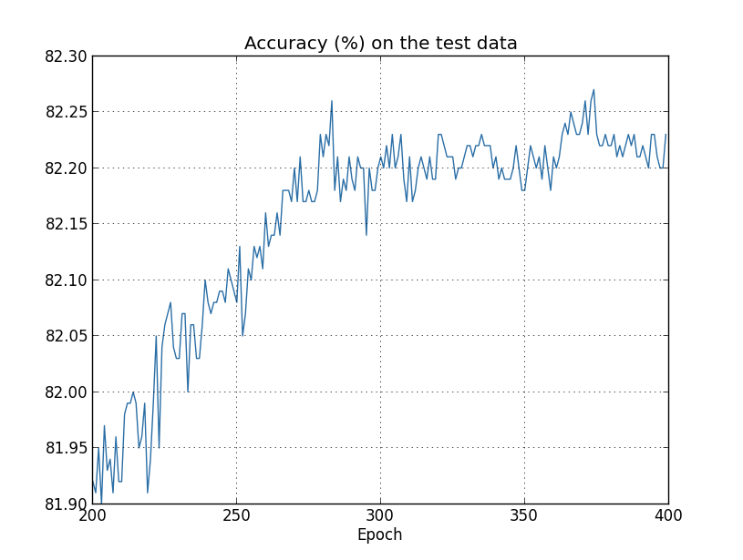
Здесь я снова сильно увеличил масштаб. За первые 200 эпох (не показаны) точность поднимается чуть ниже 82 процентов. Затем обучение постепенно замедляется. Наконец, примерно к 280-й эпохе точность классификации практически перестаёт расти. В последующих эпохах наблюдаются лишь небольшие случайные колебания вокруг значения точности на 280-й эпохе. Сравните это с предыдущим графиком, где стоимость на обучающих данных продолжает плавно снижаться. Если смотреть только на эту стоимость, кажется, что модель всё ещё становится «лучше». Но результаты по точности на тестовых данных показывают, что улучшение иллюзорно. Как и в модели, не понравившейся Ферми, то, что сеть выучивает после 280-й эпохи, уже не обобщается на тестовые данные. А значит, это бесполезное обучение. Мы говорим, что после 280-й эпохи сеть переобучается.
Вы можете спросить, не в том ли проблема, что я смотрю на стоимость на обучающих данных, а не на точность классификации на тестовых. Иными словами, может быть, мы сравниваем яблоки с апельсинами? Что если сравнить стоимость на обучающих данных со стоимостью на тестовых, то есть сравнивать сопоставимые меры? Или сравнить точность классификации и на обучающих, и на тестовых данных? На самом деле, как ни сравнивай, проявляется по сути одно и то же явление. Меняются, однако, детали. Посмотрим, например, на стоимость на тестовых данных:
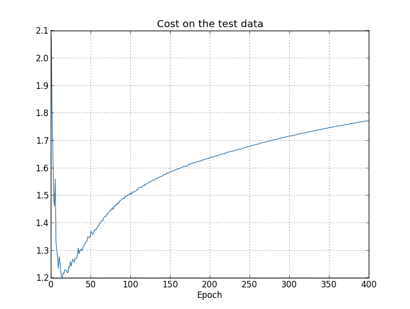
Видно, что стоимость на тестовых данных улучшается примерно до 15-й эпохи, а затем начинает ухудшаться, хотя стоимость на обучающих данных продолжает улучшаться. Это ещё один признак переобучения. Но возникает загадка: какую эпоху считать моментом, когда переобучение начинает доминировать в обучении, — 15-ю или 280-ю? С практической точки зрения нас на самом деле волнует повышение точности классификации на тестовых данных, а стоимость на тестовых данных — лишь косвенная мера точности классификации. Поэтому разумнее всего считать 280-ю эпоху той точкой, после которой в обучении нашей нейронной сети доминирует переобучение.
Ещё один признак переобучения видно по точности классификации на обучающих данных:
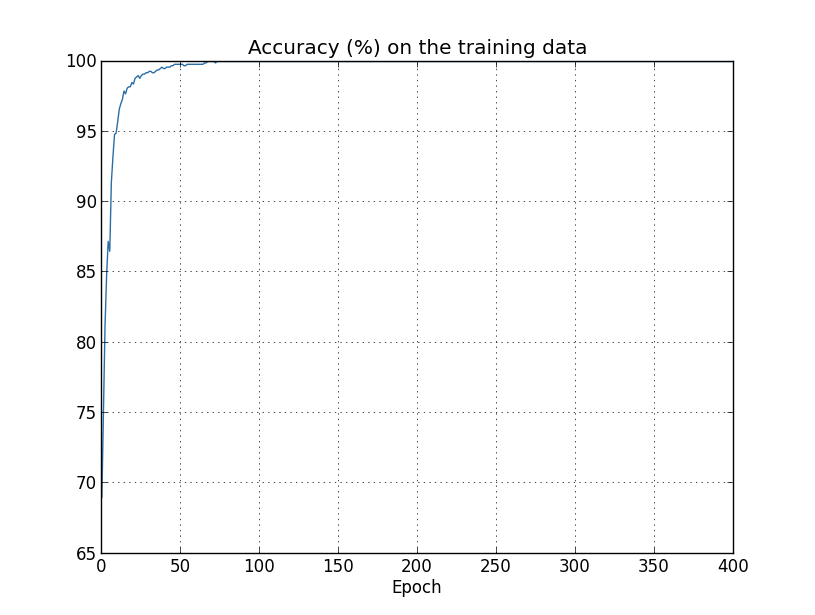
Точность поднимается до 100 процентов. То есть сеть правильно классифицирует все 1000 обучающих изображений! А точность на тестовых данных при этом достигает максимума всего в 82.27 процента. Так что сеть на самом деле изучает особенности обучающего набора, а не просто распознаёт цифры вообще. Получается почти так, будто сеть просто запоминает обучающий набор, не понимая цифры достаточно хорошо, чтобы обобщить знания на тестовый набор.
Переобучение — серьёзная проблема нейронных сетей. Особенно это касается современных сетей, в которых часто очень много весов и смещений. Чтобы обучать эффективно, нужен способ обнаруживать переобучение, чтобы не переобучить сеть. А ещё хотелось бы иметь приёмы, ослабляющие последствия переобучения.
Очевидный способ обнаружить переобучение — описанный выше подход: следить за точностью на тестовых данных по ходу обучения сети. Если видно, что точность на тестовых данных больше не растёт, обучение надо прекращать. Строго говоря, это не обязательно признак переобучения. Может быть, точность и на тестовых, и на обучающих данных перестала расти одновременно. И всё же такая стратегия предотвратит переобучение.
На самом деле мы будем использовать вариант этой стратегии. Вспомним, что, загружая данные MNIST, мы загружаем три набора данных:
>>> import mnist_loader
>>> training_data, validation_data, test_data = mnist_loader.load_data_wrapper()До сих пор мы использовали training_data и
test_data и не обращали внимания на
validation_data. validation_data содержит
10 000 изображений цифр, отличных и от 50 000 изображений обучающего
набора MNIST, и от 10 000 изображений тестового набора. Для
предотвращения переобучения мы будем использовать не
test_data, а validation_data. При этом
стратегия будет почти такой же, как описано выше для
test_data. То есть в конце каждой эпохи мы будем вычислять
точность классификации на validation_data. Как только
точность классификации на validation_data перестанет расти,
мы прекращаем обучение. Такая стратегия называется ранней остановкой.
Конечно, на практике мы не узнаем сразу, что точность перестала расти.
Вместо этого мы продолжаем обучение, пока не убедимся в этом10.
Почему для предотвращения переобучения используются
validation_data, а не test_data? На самом деле
это часть более общей стратегии: с помощью validation_data
оценивать разные пробные варианты гиперпараметров — числа эпох обучения,
скорости обучения, архитектуры сети и так далее. С помощью таких оценок
мы находим и задаём хорошие значения гиперпараметров. Собственно, хотя
до сих пор я об этом не упоминал, отчасти именно так я и пришёл к
значениям гиперпараметров, выбранным ранее в этой книге. (Подробнее об
этом позже.)
Конечно, это никак не отвечает на вопрос, почему для предотвращения
переобучения мы используем validation_data, а не
test_data. Скорее, вопрос заменяется более общим: почему
для подбора хороших гиперпараметров мы используем
validation_data, а не test_data? Чтобы понять
это, заметим, что при подборе гиперпараметров мы, скорее всего,
перепробуем много разных вариантов. Если подбирать гиперпараметры по
оценкам на test_data, можно в итоге «переобучить»
гиперпараметры под test_data. То есть найти гиперпараметры,
подходящие к конкретным особенностям test_data, но с
которыми качество сети не будет обобщаться на другие наборы данных. Мы
защищаемся от этого, подбирая гиперпараметры по
validation_data. А затем, получив нужные гиперпараметры,
выполняем окончательную оценку точности на test_data. Это
даёт уверенность, что наши результаты на test_data —
честная мера того, насколько хорошо обобщает наша нейронная сеть. Иначе
говоря, проверочные данные можно считать своего рода обучающими данными,
помогающими выучить хорошие гиперпараметры. Такой подход к поиску
хороших гиперпараметров иногда называют методом отложенной выборки (hold
out), поскольку validation_data хранятся отдельно,
«откладываются» от training_data.
На практике, даже оценив качество на test_data, мы можем
передумать и захотеть попробовать другой подход — например, другую
архитектуру сети, — а это потребует нового набора гиперпараметров. Не
рискуем ли мы тогда в итоге переобучиться и под test_data?
Не понадобится ли потенциально бесконечная череда наборов данных, чтобы
быть уверенными, что результаты обобщаются? Полностью разрешить это
опасение — глубокая и трудная задача. Но для наших практических целей мы
не будем слишком беспокоиться об этом вопросе. Мы просто двинемся
вперёд, используя базовый метод отложенной выборки на основе
training_data, validation_data и
test_data, как описано выше.
До сих пор мы рассматривали переобучение при использовании всего 1000 обучающих изображений. Что будет, если взять полный обучающий набор из 50 000 изображений? Оставим все остальные параметры прежними (30 скрытых нейронов, скорость обучения 0.5, размер мини-пакета 10), но будем обучать на всех 50 000 изображениях в течение 30 эпох. Вот график, показывающий точность классификации и на обучающих, и на тестовых данных. Заметьте, что здесь я использовал тестовые, а не проверочные данные, чтобы результаты было проще сравнивать с прежними графиками.
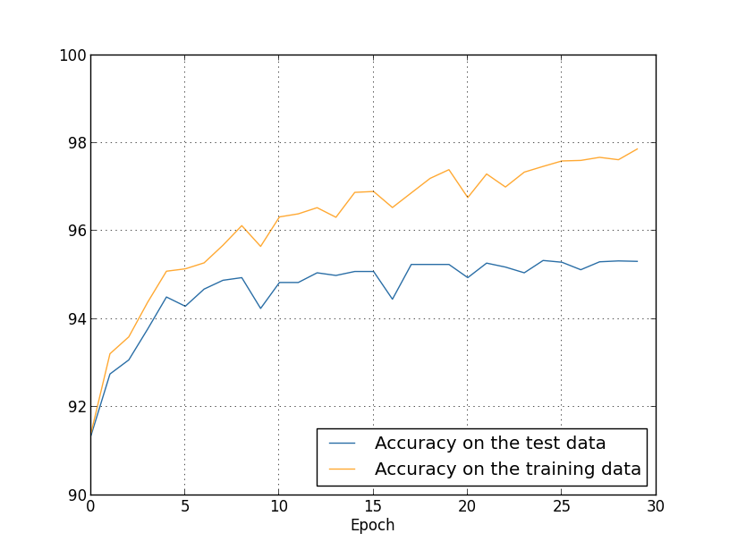
Как видите, точность на тестовых и обучающих данных остаётся гораздо ближе, чем при 1000 обучающих примеров. В частности, лучшая точность классификации на обучающих данных, 97.86 процента, лишь на 2.53 процента выше, чем 95.33 процента на тестовых. Для сравнения, раньше разрыв составлял 17.73 процента! Переобучение всё ещё есть, но оно сильно уменьшилось. Наша сеть гораздо лучше обобщает с обучающих данных на тестовые. Вообще, один из лучших способов уменьшить переобучение — увеличить объём обучающих данных. При достаточном количестве обучающих данных даже очень большой сети трудно переобучиться. К сожалению, обучающие данные бывают дорогими или труднодоступными, так что этот вариант не всегда практичен.
3.2.1 Регуляризация
Увеличение объёма обучающих данных — один из способов уменьшить переобучение. Есть ли другие способы ослабить переобучение? Один из возможных подходов — уменьшить размер сети. Однако большие сети потенциально мощнее маленьких, так что на этот шаг мы пошли бы лишь неохотно.
К счастью, существуют другие приёмы, уменьшающие переобучение даже при фиксированной сети и фиксированных обучающих данных. Они называются приёмами регуляризации. В этом разделе я опишу один из самых распространённых приёмов регуляризации, который иногда называют ослаблением весов (weight decay) или L2-регуляризацией. Идея L2-регуляризации — добавить к функции стоимости дополнительное слагаемое, так называемое регуляризующее слагаемое. Вот регуляризованная перекрёстная энтропия: \[C = -\frac{1}{n} \sum_{xj} \left[ y_j \ln a^L_j+(1-y_j) \ln (1-a^L_j)\right] + \frac{\lambda}{2n} \sum_w w^2. \tag{85}\label{eq:85}\] Первое слагаемое — обычное выражение перекрёстной энтропии. Но мы добавили второе — сумму квадратов всех весов сети. Оно умножается на коэффициент \(\lambda/2n\), где \(\lambda>0\) называется параметром регуляризации, а \(n\), как обычно, — размер обучающей выборки. Как выбирать \(\lambda\), я расскажу позже. Стоит также отметить, что регуляризующее слагаемое не включает смещения. К этому я тоже вернусь ниже.
Разумеется, регуляризовать можно и другие функции стоимости, например квадратичную. Это делается аналогично: \[C = \frac{1}{2n} \sum_x \left\|y-a^L\right\|^2 + \frac{\lambda}{2n} \sum_w w^2. \tag{86}\label{eq:86}\] В обоих случаях регуляризованную функцию стоимости можно записать как \[C = C_0 + \frac{\lambda}{2n}\sum_w w^2,\tag{87}\label{eq:87}\] где \(C_0\) — исходная, нерегуляризованная функция стоимости.
Интуитивно регуляризация заставляет сеть при прочих равных предпочитать малые веса. Большие веса допускаются, только если они заметно улучшают первую часть функции стоимости. Иначе говоря, регуляризацию можно рассматривать как компромисс между поиском малых весов и минимизацией исходной функции стоимости. Относительная важность двух сторон компромисса зависит от значения \(\lambda\): при малом \(\lambda\) мы предпочитаем минимизировать исходную функцию стоимости, а при большом \(\lambda\) — малые веса.
Совсем не очевидно, почему такой компромисс должен помогать уменьшить переобучение! Но оказывается, что помогает. Почему — разберём в следующем разделе. А сначала проработаем пример, показывающий, что регуляризация действительно уменьшает переобучение.
Чтобы построить такой пример, сначала нужно понять, как применять алгоритм обучения стохастическим градиентным спуском в регуляризованной нейронной сети. А именно, нужно знать, как вычислить частные производные \(\partial{}C/\partial{}w\) и \(\partial{}C/\partial{}b\) для всех весов и смещений сети. Взяв частные производные уравнения (87), получим \[\frac{\partial C}{\partial w} = \frac{\partial C_0}{\partial w} + \frac{\lambda}{n} w \tag{88}\label{eq:88}\] \[\frac{\partial C}{\partial b} = \frac{\partial C_0}{\partial b}. \tag{89}\label{eq:89}\] Слагаемые \(\partial{}C_0/\partial{}w\) и \(\partial{}C_0/\partial{}b\) можно вычислить обратным распространением, как описано в прошлой главе. Значит, градиент регуляризованной функции стоимости вычислить легко: применяем обратное распространение как обычно, а затем прибавляем \(\frac{\lambda}{n}w\) к частным производным по всем весам. Частные производные по смещениям не меняются, поэтому правило обучения градиентным спуском для смещений остаётся обычным: \[b\to b-\eta\frac{\partial{}C_0}{\partial{}b}. \tag{90}\label{eq:90}\] Правило обучения для весов принимает вид: \[w \rightarrow w-\eta \frac{\partial C_0}{\partial w}-\frac{\eta \lambda}{n} w = \left(1-\frac{\eta \lambda}{n}\right) w -\eta \frac{\partial C_0}{\partial w}. \tag{92}\label{eq:92}\] Это в точности обычное правило обучения градиентным спуском, только вес \(w\) сначала умножается на коэффициент \(1-\eta\frac{\lambda}{n}\). Такое масштабирование иногда называют ослаблением весов, поскольку оно уменьшает веса. На первый взгляд кажется, что веса при этом неудержимо стремятся к нулю. Но это не так: другое слагаемое может приводить к росту весов, если это уменьшает нерегуляризованную функцию стоимости.
Так работает градиентный спуск. А как насчёт стохастического градиентного спуска? Как и в нерегуляризованном стохастическом градиентном спуске, \(\partial{}C_0/\partial{}w\) можно оценить, усреднив по мини-пакету из \(m\) обучающих примеров. Таким образом, регуляризованное правило обучения для стохастического градиентного спуска принимает вид (ср. уравнение (20)) \[w \rightarrow \left(1-\frac{\eta \lambda}{n}\right) w -\frac{\eta}{m} \sum_x \frac{\partial C_x}{\partial w}, \tag{93}\label{eq:93}\] где сумма берётся по обучающим примерам \(x\) мини-пакета, а \(C_x\) — (нерегуляризованная) стоимость каждого обучающего примера. Это в точности обычное правило стохастического градиентного спуска, если не считать множителя ослабления весов \(1-\eta\lambda/n\). Наконец, для полноты приведу регуляризованное правило обучения для смещений. Оно, разумеется, в точности такое же, как в нерегуляризованном случае (ср. уравнение (21)): \[b \to b - \frac{\eta}{m} \sum_x \frac{\partial C_x}{\partial b}, \tag{94}\label{eq:94}\] где сумма берётся по обучающим примерам \(x\) мини-пакета.
Посмотрим, как регуляризация меняет качество работы нашей нейронной
сети. Возьмём сеть с 30 скрытыми нейронами, размер мини-пакета 10,
скорость обучения 0.5 и функцию стоимости на основе перекрёстной
энтропии. Но на этот раз зададим параметр регуляризации \(\lambda =0.1\). Заметьте, что в коде
используется имя переменной lmbda, поскольку
lambda — зарезервированное слово Python с совсем другим
смыслом. Я снова использовал test_data, а не
validation_data. Строго говоря, следовало бы использовать
validation_data по всем причинам, обсуждавшимся выше. Но я
решил использовать test_data, поскольку так результаты
проще сравнивать с прежними, нерегуляризованными. Код легко изменить,
чтобы использовать validation_data, и вы увидите, что
результаты получатся похожими.
>>> import mnist_loader
>>> training_data, validation_data, test_data = mnist_loader.load_data_wrapper()
>>> import network2
>>> net = network2.Network([784, 30, 10], cost=network2.CrossEntropyCost)
>>> net.large_weight_initializer()
>>> net.SGD(training_data[:1000], 400, 10, 0.5, evaluation_data=test_data, lmbda = 0.1, monitor_evaluation_cost=True, monitor_evaluation_accuracy=True, monitor_training_cost=True, monitor_training_accuracy=True)Стоимость на обучающих данных всё время уменьшается, примерно как и в прежнем, нерегуляризованном случае11:
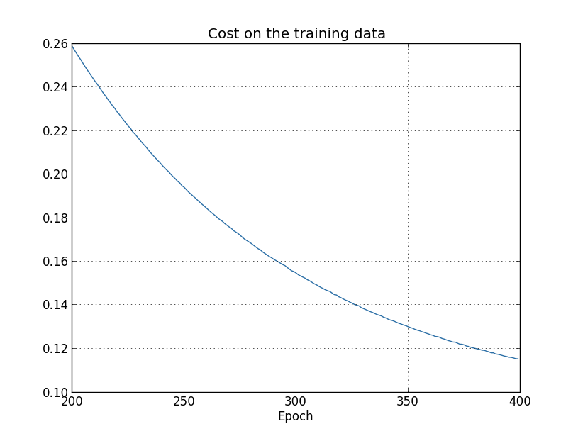
Но на этот раз точность на test_data продолжает расти на
протяжении всех 400 эпох:
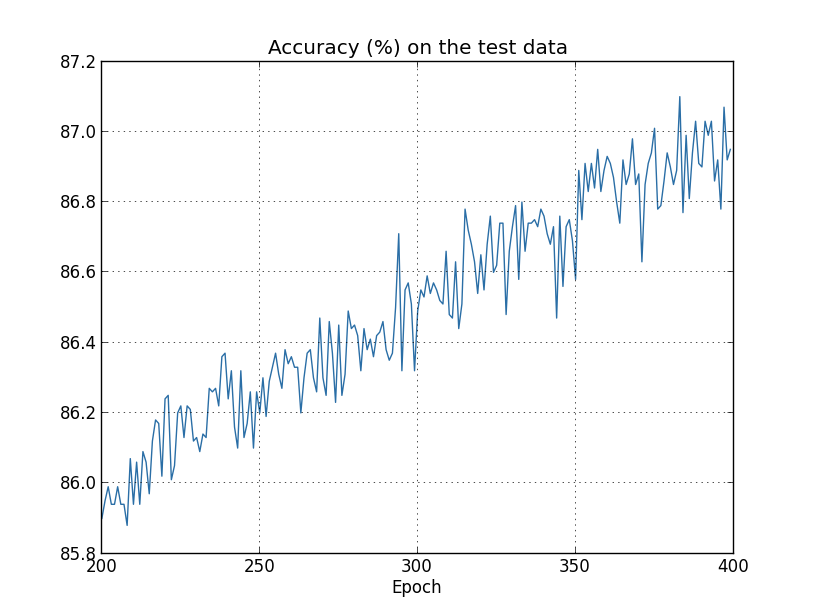
Очевидно, регуляризация подавила переобучение. Более того, точность заметно выше: пиковая точность классификации составляет 87.1 процента против пика в 82.27 процента без регуляризации. Почти наверняка можно было бы получить заметно лучшие результаты, продолжив обучение после 400 эпох. Судя по всему, эмпирически регуляризация заставляет сеть лучше обобщать и заметно ослабляет последствия переобучения.
Что будет, если уйти из искусственной ситуации с 1000 обучающих изображений и вернуться к полному обучающему набору из 50 000 изображений? Мы уже видели, что с полными 50 000 изображений переобучение — гораздо меньшая проблема. Поможет ли регуляризация ещё больше? Оставим гиперпараметры прежними — 30 эпох, скорость обучения 0.5, размер мини-пакета 10. Однако параметр регуляризации нужно изменить. Причина в том, что размер обучающей выборки \(n\) изменился с \(n\)=1000 на \(n\)=50 000, а это меняет множитель ослабления весов \(1-\eta\lambda/n\). Если оставить \(\lambda =0.1\), ослабление весов будет гораздо меньше, а значит, и эффект регуляризации гораздо слабее. Чтобы это компенсировать, возьмём \(\lambda =5.0\).
Обучим сеть, предварительно заново инициализировав веса:
>>> net.large_weight_initializer()
>>> net.SGD(training_data, 30, 10, 0.5, evaluation_data=test_data, lmbda = 5.0,
... monitor_evaluation_accuracy=True, monitor_training_accuracy=True)Получаем следующие результаты:
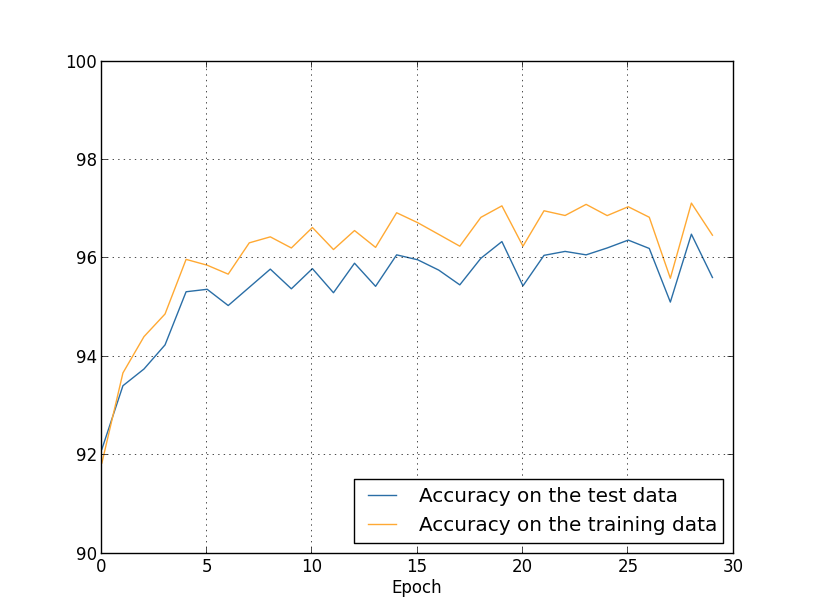
Здесь много хороших новостей. Во-первых, точность классификации на тестовых данных выросла с 95.49 процента без регуляризации до 96.49 процента. Это большое улучшение. Во-вторых, видно, что разрыв между результатами на обучающих и тестовых данных стал гораздо меньше, чем раньше, — меньше процента. Это всё ещё заметный разрыв, но мы явно существенно продвинулись в уменьшении переобучения.
Наконец, посмотрим, какую точность классификации на тестовых данных мы получим со 100 скрытыми нейронами и параметром регуляризации \(\lambda =5.0\). Подробно анализировать переобучение здесь не буду — это просто для удовольствия, чтобы посмотреть, какой точности можно достичь с нашими новыми приёмами: функцией стоимости на основе перекрёстной энтропии и L2-регуляризацией.
>>> net = network2.Network([784, 100, 10], cost=network2.CrossEntropyCost)
>>> net.large_weight_initializer()
>>> net.SGD(training_data, 30, 10, 0.5, lmbda=5.0, evaluation_data=validation_data,
... monitor_evaluation_accuracy=True)
Итоговая точность классификации на проверочных данных — 97.92 процента. Это большой скачок по сравнению со случаем 30 скрытых нейронов. А если ещё немного подстроить параметры — обучать 60 эпох при \(\eta=0.1\) и \(\lambda =5.0\), — мы преодолеваем барьер в 98 процентов и получаем точность классификации 98.04 процента на проверочных данных. Неплохо для программы, которая, как оказывается, занимает 152 строки кода!
Я описал регуляризацию как способ уменьшить переобучение и повысить точность классификации. На самом деле это не единственная её польза. Многократно запуская наши сети для MNIST с разными (случайными) начальными весами, я эмпирически обнаружил, что нерегуляризованные прогоны иногда «застревают», по-видимому, попадая в локальные минимумы функции стоимости. В результате разные прогоны порой дают сильно различающиеся результаты. Регуляризованные же прогоны дают гораздо более воспроизводимые результаты.
Почему так происходит? Эвристически: если функция стоимости не регуляризована, то длина вектора весов при прочих равных, скорее всего, будет расти. Со временем вектор весов может стать действительно очень большим. Из-за этого вектор весов может застрять, указывая примерно в одном и том же направлении, поскольку при большой длине изменения от градиентного спуска лишь чуть-чуть меняют направление. Думаю, это явление мешает алгоритму обучения как следует исследовать пространство весов, а значит, затрудняет поиск хороших минимумов функции стоимости.
3.2.2 Почему регуляризация помогает уменьшить переобучение?
Мы эмпирически увидели, что регуляризация помогает уменьшить переобучение. Это обнадёживает, но, к сожалению, не очевидно, почему регуляризация помогает! Стандартное объяснение, которое обычно приводят, звучит примерно так: меньшие веса в некотором смысле означают меньшую сложность, а значит, дают более простое и сильное объяснение данных, и поэтому им следует отдавать предпочтение. Но это довольно сжатое объяснение, и в нём есть элементы, которые могут показаться сомнительными или загадочными. Давайте разберём его по частям и критически рассмотрим. Для этого предположим, что у нас есть простой набор данных, для которого мы хотим построить модель:
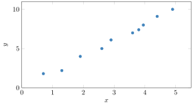
Подразумевается, что мы изучаем некоторое явление реального мира, а \(x\) и \(y\) — реальные данные. Наша цель — построить модель, позволяющую предсказывать \(y\) как функцию \(x\). Для этого можно было бы использовать нейронные сети, но я сделаю нечто ещё более простое: попробую смоделировать \(y\) многочленом от \(x\). Я делаю так вместо использования нейросетей, потому что с многочленами всё будет особенно прозрачно. Разобравшись со случаем многочленов, мы перенесём выводы на нейронные сети. На графике выше десять точек, а значит, можно найти единственный многочлен 9-й степени \(y=a_0x^9+a_1x^8+\ldots+a_9\), который точно проходит через все данные. Вот график этого многочлена12 :
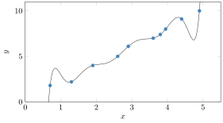
Он даёт точное совпадение. Но хорошего совпадения можно добиться и с помощью линейной модели \(y=2x\):
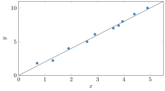
Какая из этих моделей лучше? Какая с большей вероятностью верна? И какая с большей вероятностью хорошо обобщится на другие проявления того же явления реального мира?
Это трудные вопросы. На самом деле ни на один из них нельзя ответить с уверенностью без гораздо большей информации о стоящем за данными явлении. Но рассмотрим две возможности: (1) многочлен 9-й степени действительно описывает явление реального мира, и потому модель будет обобщаться идеально; (2) правильная модель — \(y=2x\), но есть небольшой дополнительный шум, скажем, из-за ошибок измерений, и поэтому модель не совпадает с данными точно.
Априори невозможно сказать, какая из двух возможностей верна. (Или, может быть, верна какая-то третья.) Логически верной может оказаться любая. И разница тут не тривиальная. Да, на имеющихся данных между моделями лишь небольшое различие. Но предположим, что мы хотим предсказать значение \(y\) при каком-то большом \(x\), гораздо большем любого из показанных на графике. Если попытаться это сделать, предсказания двух моделей разойдутся кардинально: в модели многочлена 9-й степени станет доминировать слагаемое \(x^9\), а линейная модель так и останется линейной.
Одна точка зрения состоит в том, что в науке следует выбирать более простое объяснение, если только нас не вынуждают поступить иначе. Найдя простую модель, которая, похоже, объясняет множество точек данных, хочется воскликнуть «Эврика!». Ведь маловероятно, что простое объяснение возникло по чистой случайности. Скорее, мы подозреваем, что модель выражает какую-то глубинную истину о явлении. В нашем случае модель \(y=2x+{\rm шум}\) кажется гораздо проще, чем \(y=a_0x^9+a_1x^8+\ldots\). Было бы удивительно, если бы такая простота возникла случайно, поэтому мы подозреваем, что \(y=2x+{\rm шум}\) выражает какую-то глубинную истину. С этой точки зрения модель 9-й степени на самом деле просто выучивает эффекты локального шума. И хотя для этих конкретных точек данных модель 9-й степени работает идеально, на другие точки она обобщаться не будет, а линейная модель с шумом окажется более предсказательной.
Посмотрим, что эта точка зрения означает для нейронных сетей. Предположим, что у нашей сети в основном малые веса, как обычно и бывает в регуляризованной сети. Малость весов означает, что поведение сети не будет сильно меняться, если тут и там изменить несколько случайных входов. Поэтому регуляризованной сети трудно выучить эффекты локального шума в данных. Можно считать это способом сделать так, чтобы отдельные свидетельства не слишком влияли на выход сети. Вместо этого регуляризованная сеть учится реагировать на такие виды свидетельств, которые часто встречаются по всему обучающему набору. А сеть с большими весами может заметно менять поведение в ответ на малые изменения входа. Поэтому нерегуляризованная сеть может с помощью больших весов выучить сложную модель, несущую много информации о шуме в обучающих данных. Короче говоря, регуляризованные сети вынуждены строить относительно простые модели, основанные на закономерностях, часто встречающихся в обучающих данных, и устойчивы к выучиванию особенностей шума в этих данных. Надежда в том, что это заставит сети по-настоящему изучать рассматриваемое явление и лучше обобщать то, что они выучили.
При всём этом идея предпочитать более простые объяснения должна вас настораживать. Иногда её называют «бритвой Оккама» и ревностно применяют, будто это общий научный принцип. Но, конечно, никакой это не общий научный принцип. Нет никаких априорных логических оснований предпочитать простые объяснения более сложным. Более того, иногда правильным оказывается именно более сложное объяснение.
Опишу два примера, когда правильными оказались более сложные объяснения. В 1940-х годах физик Марсель Шейн объявил об открытии новой элементарной частицы. Компания, в которой он работал, General Electric, была в восторге и широко разрекламировала открытие. Но физик Ганс Бете отнёсся к нему скептически. Бете приехал к Шейну и посмотрел на фотопластинки с треками новой частицы. Шейн показывал Бете пластинку за пластинкой, но на каждой Бете находил какую-нибудь проблему, говорившую о том, что эти данные следует отбросить. Наконец Шейн показал Бете пластинку, которая выглядела хорошо. Бете сказал, что это может быть просто статистическая случайность. Шейн: «Да, но вероятность того, что это статистика, даже по вашей собственной формуле — один к пяти». Бете: «Но мы уже посмотрели пять пластинок». В конце концов Шейн сказал: «Но каждую из хороших пластинок, каждый из хороших снимков вы объясняете своей теорией, а у меня одна гипотеза, объясняющая все пластинки: что это [новая частица]». Бете ответил: «Единственное различие между вашими и моими объяснениями в том, что ваше неверно, а все мои верны. Ваше единственное объяснение неверно, а все мои многочисленные объяснения верны». Дальнейшие исследования подтвердили, что Природа согласна с Бете, и частицы Шейна больше нет13.
Второй пример: в 1859 году астроном Урбен Леверье заметил, что орбита Меркурия имеет не совсем ту форму, которую предсказывает ньютоновская теория тяготения. Отклонение от теории Ньютона было крошечным-крошечным, и несколько предложенных в то время объяснений сводились к тому, что теория Ньютона более или менее верна, но нуждается в крошечной поправке. В 1916 году Эйнштейн показал, что отклонение очень хорошо объясняется его общей теорией относительности — теорией, радикально отличающейся от ньютоновского тяготения и основанной на гораздо более сложной математике. Несмотря на эту дополнительную сложность, сегодня признано, что объяснение Эйнштейна верно, а ньютоновская гравитация, даже в видоизменённых формах, неверна. Отчасти потому, что теперь мы знаем: теория Эйнштейна объясняет многие другие явления, с которыми у теории Ньютона трудности. Более того, что ещё впечатляюще, теория Эйнштейна точно предсказывает ряд явлений, которые ньютоновская гравитация не предсказывает вовсе. Но эти впечатляющие качества поначалу были далеко не очевидны. Если судить только по простоте, то какая-нибудь видоизменённая форма теории Ньютона, пожалуй, выглядела бы привлекательнее.
Из этих историй можно извлечь три урока. Во-первых, решить, какое из двух объяснений действительно «проще», бывает весьма тонким делом. Во-вторых, даже если мы можем вынести такое суждение, простоту как ориентир нужно использовать с большой осторожностью! В-третьих, настоящая проверка модели — не простота, а то, насколько хорошо она предсказывает новые явления в новых режимах поведения.
С учётом сказанного и помня о необходимости осторожности, эмпирический факт таков: регуляризованные нейронные сети обычно обобщают лучше нерегуляризованных. Поэтому в оставшейся части книги мы будем часто пользоваться регуляризацией. Истории выше я привёл лишь затем, чтобы объяснить, почему никто до сих пор не дал полностью убедительного теоретического объяснения того, почему регуляризация помогает сетям обобщать. Исследователи и сейчас пишут статьи, где пробуют разные подходы к регуляризации, сравнивают их, выясняя, какой работает лучше, и пытаются понять, почему одни подходы работают лучше, а другие хуже. Так что регуляризацию можно считать своего рода «костылём». Хотя она часто помогает, у нас нет вполне удовлетворительного систематического понимания происходящего — лишь неполные эвристики и практические правила.
За этим стоит более глубокий круг вопросов, затрагивающих самую суть науки. Это вопрос о том, как мы обобщаем. Регуляризация может дать нам вычислительную волшебную палочку, помогающую сетям лучше обобщать, но она не даёт принципиального понимания того, как работает обобщение и какой подход наилучший14.
Это особенно досадно, потому что в повседневной жизни мы, люди, обобщаем феноменально хорошо. Показав ребёнку всего несколько изображений слона, можно быстро научить его узнавать других слонов. Конечно, он может иногда ошибаться, например принять носорога за слона, но в целом этот процесс работает поразительно точно. Итак, у нас есть система — человеческий мозг — с огромным числом свободных параметров. И, увидев всего одно или несколько обучающих изображений, эта система учится обобщать на другие изображения. В некотором смысле наш мозг регуляризует поразительно хорошо! Как мы это делаем? Пока мы не знаем. Я ожидаю, что в будущем мы разработаем более мощные приёмы регуляризации искусственных нейронных сетей, которые в итоге позволят нейросетям хорошо обобщать даже по маленьким наборам данных.
На самом деле наши сети уже обобщают лучше, чем можно было бы априори ожидать. У сети со 100 скрытыми нейронами почти 80 000 параметров. А в обучающих данных у нас лишь 50 000 изображений. Это всё равно что пытаться подогнать многочлен 80-тысячной степени к 50 000 точек данных. По всем правилам наша сеть должна чудовищно переобучаться. И всё же, как мы видели, такая сеть на самом деле довольно хорошо обобщает. Почему? Это плохо изучено. Высказывалась гипотеза15, что «динамика обучения градиентным спуском в многослойных сетях обладает эффектом „саморегуляризации“». Это исключительная удача, но несколько тревожно, что мы не понимаем, почему это так. А пока будем придерживаться прагматичного подхода и использовать регуляризацию везде, где можем. Нашим нейронным сетям это пойдёт на пользу.
Завершу этот раздел, вернувшись к детали, которую раньше оставил без объяснения: L2-регуляризация не ограничивает смещения. Конечно, процедуру регуляризации легко изменить так, чтобы регуляризовать и смещения. Эмпирически это часто мало меняет результаты, так что регуляризовать смещения или нет — в какой-то мере просто соглашение. Однако стоит отметить, что большое смещение не делает нейрон чувствительным к входам так, как это делают большие веса. Поэтому не нужно беспокоиться, что большие смещения позволят сети выучить шум в обучающих данных. В то же время большие смещения дают сети больше гибкости в поведении — в частности, с большими смещениями нейронам легче насыщаться, что иногда желательно. По этим причинам смещения обычно не включают в регуляризацию.
3.2.3 Другие приёмы регуляризации
Помимо L2-регуляризации существует множество других приёмов регуляризации. Их разработано так много, что я никак не смогу описать их все. В этом разделе я кратко опишу три других подхода к уменьшению переобучения: L1-регуляризацию, дропаут и искусственное увеличение обучающей выборки. Мы не будем изучать эти приёмы и близко так глубоко, как предыдущий. Цель — познакомиться с основными идеями и получить представление о разнообразии доступных приёмов регуляризации.
L1-регуляризация. В этом подходе мы изменяем нерегуляризованную функцию стоимости, прибавляя к ней сумму модулей весов: \[C = C_0 + \frac{\lambda}{n} \sum_w |w|.\tag{95}\label{eq:95}\] Интуитивно это похоже на L2-регуляризацию: большие веса штрафуются, и сеть стремится предпочитать малые веса. Конечно, регуляризующее слагаемое L1 не совпадает с регуляризующим слагаемым L2, так что ожидать в точности такого же поведения не стоит. Попробуем понять, чем поведение сети, обученной с L1-регуляризацией, отличается от поведения сети, обученной с L2-регуляризацией.
Для этого посмотрим на частные производные функции стоимости. Продифференцировав (95), получим: \[\frac{\partial C}{\partial w} = \frac{\partial C_0}{\partial w} + \frac{\lambda}{n} \, {\rm sgn}(w),\tag{96}\label{eq:96}\] где \({\rm sgn}(w)\) — знак \(w\), то есть \(+1\), если \(w\) положительно, и \(-1\), если \(w\) отрицательно. С помощью этого выражения легко изменить обратное распространение, чтобы выполнять стохастический градиентный спуск с L1-регуляризацией. Получающееся правило обновления для сети с L1-регуляризацией таково: \[w \to w' = w-\frac{\eta \lambda}{n} \mbox{sgn}(w) - \eta \frac{\partial C_0}{\partial w}, \tag{97}\label{eq:97}\] где, как обычно, \(\partial{}C_0/\partial{}w\) при желании можно оценивать средним по мини-пакету. Сравните это с правилом обновления для L2-регуляризации (ср. уравнение (93)): \[w \to w' = w\left(1 - \frac{\eta \lambda}{n} \right) - \eta \frac{\partial C_0}{\partial w}. \tag{98}\label{eq:98}\] В обоих выражениях регуляризация уменьшает веса. Это согласуется с нашей интуицией: оба вида регуляризации штрафуют большие веса. Но уменьшаются веса по-разному. При L1-регуляризации веса уменьшаются к 0 на постоянную величину. При L2-регуляризации — на величину, пропорциональную \(w\). Поэтому, когда какой-то вес велик по модулю \(|w|\), L1-регуляризация уменьшает его гораздо слабее, чем L2. А когда \(|w|\) мал, L1-регуляризация уменьшает вес гораздо сильнее, чем L2. В итоге L1-регуляризация стремится сосредоточить вес сети в относительно небольшом числе очень важных связей, а остальные веса стремятся к нулю.
В этом обсуждении я обошёл одну тонкость: частная производная \(\partial{}C/\partial{}w\) не определена при \(w=0\). Причина в том, что у функции \(|w|\) в точке \(w=0\) острый «угол», и в этой точке она не дифференцируема. Но это не страшно. При \(w=0\) мы просто будем применять обычное (нерегуляризованное) правило стохастического градиентного спуска. Это должно быть нормально: интуитивно регуляризация уменьшает веса, а вес, который уже равен 0, уменьшить, очевидно, нельзя. Точнее говоря, мы будем использовать уравнения (96) и (97) с соглашением \({\rm sgn}(0)=0\). Это даёт удобное компактное правило стохастического градиентного спуска с L1-регуляризацией.
Дропаут. Дропаут (dropout, «выбрасывание») — принципиально иной приём регуляризации. В отличие от L1- и L2-регуляризации, он не связан с изменением функции стоимости. Вместо этого при дропауте мы изменяем саму сеть. Сначала опишу базовую механику дропаута, а затем — почему он работает и какие даёт результаты.
Пусть мы обучаем сеть:
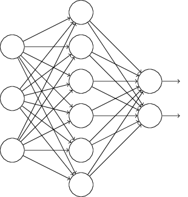
А именно, пусть у нас есть обучающий вход \(x\) и соответствующий желаемый выход \(y\). Обычно мы обучали бы сеть, прогоняя \(x\) через сеть вперёд, а затем выполняя обратное распространение, чтобы определить вклад в градиент. При дропауте этот процесс меняется. Сначала мы случайным образом (и временно) удаляем половину скрытых нейронов сети, не трогая входные и выходные нейроны. После этого получается сеть примерно такого вида. Обратите внимание: выброшенные нейроны, то есть временно удалённые, по-прежнему показаны бледно:
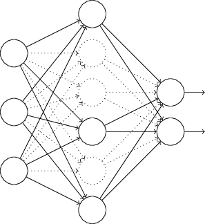
Мы прогоняем вход \(x\) вперёд через изменённую сеть, а затем выполняем обратное распространение — тоже через изменённую сеть. Проделав это для мини-пакета примеров, мы обновляем соответствующие веса и смещения. Затем повторяем процесс: сначала восстанавливаем выброшенные нейроны, затем выбираем новое случайное подмножество скрытых нейронов для удаления, оцениваем градиент по другому мини-пакету и обновляем веса и смещения сети.
Повторяя этот процесс снова и снова, сеть выучит набор весов и смещений. Конечно, эти веса и смещения выучены в условиях, когда половина скрытых нейронов была выброшена. Когда же мы запускаем полную сеть, активных скрытых нейронов оказывается вдвое больше. Чтобы это компенсировать, мы уменьшаем вдвое веса связей, исходящих из скрытых нейронов.
Процедура дропаута может показаться странной и придуманной ad hoc. Почему мы ожидаем, что она поможет с регуляризацией? Чтобы объяснить, что происходит, ненадолго забудьте о дропауте и представьте, что мы обучаем нейронные сети стандартным образом (без дропаута). А именно, представьте, что мы обучаем несколько разных нейронных сетей на одних и тех же обучающих данных. Конечно, сети могут начинать не с одинаковых значений, и в результате после обучения они иногда дают разные результаты. В таком случае можно использовать какую-нибудь схему усреднения или голосования, чтобы решить, какой выход принять. Например, если мы обучили пять сетей и три из них относят цифру к «3», то, вероятно, это действительно «3». Две другие сети, скорее всего, просто ошибаются. Такие схемы усреднения часто оказываются мощным (хотя и дорогим) способом уменьшить переобучение. Причина в том, что разные сети могут переобучаться по-разному, а усреднение помогает устранить такое переобучение.
Причём тут дропаут? Эвристически, выбрасывая разные наборы нейронов, мы как будто обучаем разные нейронные сети. Так что процедура дропаута похожа на усреднение эффектов очень большого числа разных сетей. Разные сети будут переобучаться по-разному, и потому, будем надеяться, общий эффект дропаута — уменьшение переобучения.
Родственное эвристическое объяснение дропаута дано в одной из первых статей, где использовался этот приём16: «Этот приём уменьшает сложные коадаптации нейронов, поскольку нейрон не может полагаться на присутствие конкретных других нейронов. Поэтому он вынужден выучивать более устойчивые признаки, полезные в сочетании со многими различными случайными подмножествами других нейронов». Иными словами, если считать сеть моделью, делающей предсказания, то дропаут можно рассматривать как способ сделать модель устойчивой к потере любого отдельного свидетельства. В этом он несколько похож на L1- и L2-регуляризацию, которые уменьшают веса и тем самым делают сеть устойчивее к потере любой отдельной связи.
Конечно, настоящая мера ценности дропаута — то, что он оказался очень успешным в повышении качества нейронных сетей. В исходной статье17, представившей этот приём, его применили ко множеству разных задач. Для нас особенно интересно, что авторы применили дропаут к классификации цифр MNIST с помощью обычной сети прямого распространения, похожей на те, что рассматривали мы. В статье отмечалось, что лучший результат, достигнутый к тому времени на такой архитектуре, — 98.4 процента точности классификации на тестовом наборе. Авторы улучшили его до 98.7 процента, сочетая дропаут с видоизменённой формой L2-регуляризации. Столь же впечатляющие результаты получены и для многих других задач, включая распознавание изображений и речи и обработку естественного языка. Дропаут оказался особенно полезен при обучении больших глубоких сетей, где проблема переобучения часто стоит остро.
Искусственное расширение обучающих данных. Мы уже видели, что при обучении всего на 1000 изображений точность классификации MNIST падает до середины восьмидесятых процентов. Неудивительно: меньше обучающих данных — значит, сеть увидит меньше вариантов того, как люди пишут цифры. Попробуем обучить нашу сеть с 30 скрытыми нейронами на обучающих наборах разного размера и посмотрим, как меняется качество. Обучаем с размером мини-пакета 10, скоростью обучения \(\eta=0.5\), параметром регуляризации \(\lambda=5.0\) и функцией стоимости на основе перекрёстной энтропии. На полном обучающем наборе будем обучать 30 эпох, а для меньших наборов пропорционально увеличим число эпох. Чтобы множитель ослабления весов был одинаковым для всех обучающих наборов, на полном наборе возьмём параметр регуляризации \(\lambda=5.0\), а для меньших наборов пропорционально уменьшим \(\lambda\)18.
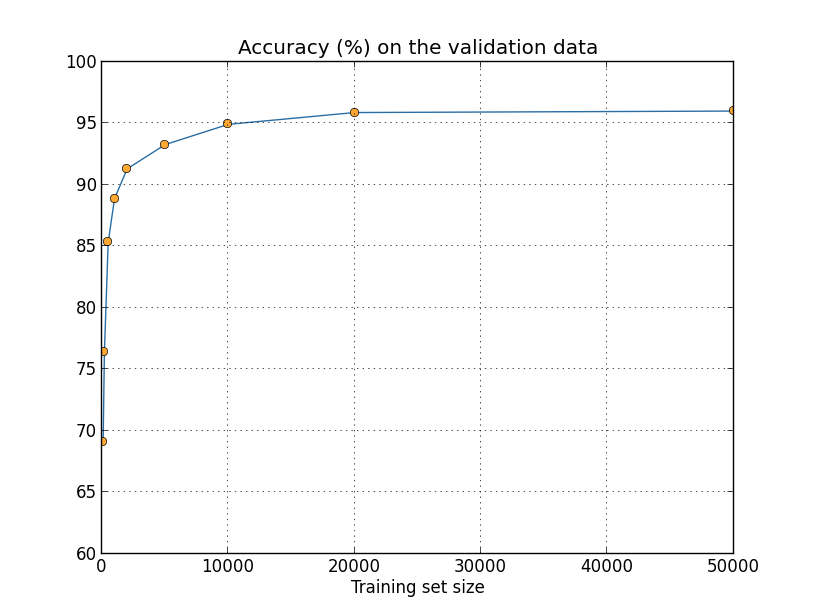
Как видите, с ростом объёма обучающих данных точность классификации заметно растёт. Вероятно, рост продолжался бы и дальше, будь данных больше. Правда, по графику выше кажется, что мы приближаемся к насыщению. Но давайте перестроим график, отложив размер обучающего набора в логарифмическом масштабе:
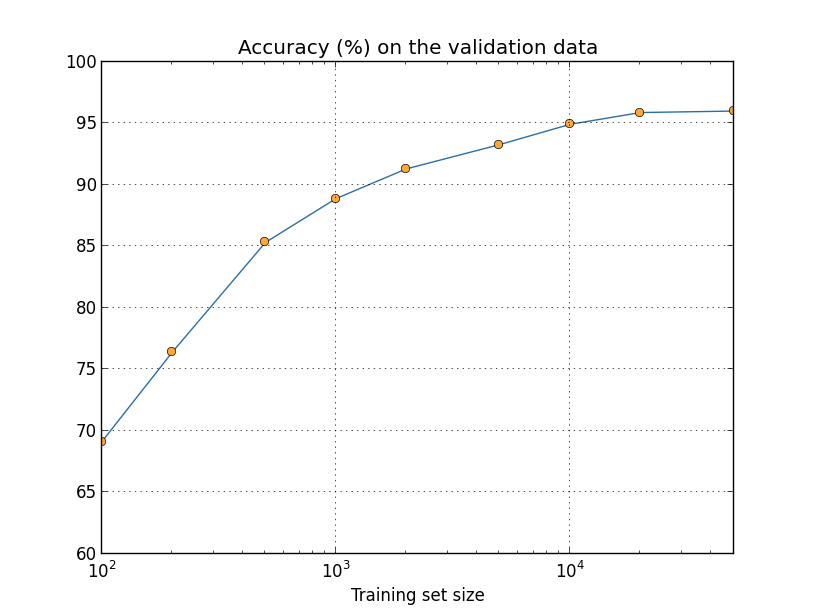
Явно видно, что к концу график всё ещё идёт вверх. Это говорит о том, что если бы обучающих данных было гораздо больше — скажем, миллионы или даже миллиарды образцов почерка вместо 50 000, — то даже эта очень маленькая сеть, скорее всего, работала бы заметно лучше.
Получить больше обучающих данных — отличная идея. К сожалению, это может быть дорого и поэтому не всегда возможно на практике. Однако есть другая идея, работающая почти так же хорошо, — искусственно расширить обучающие данные. Возьмём, например, обучающее изображение пятёрки из MNIST
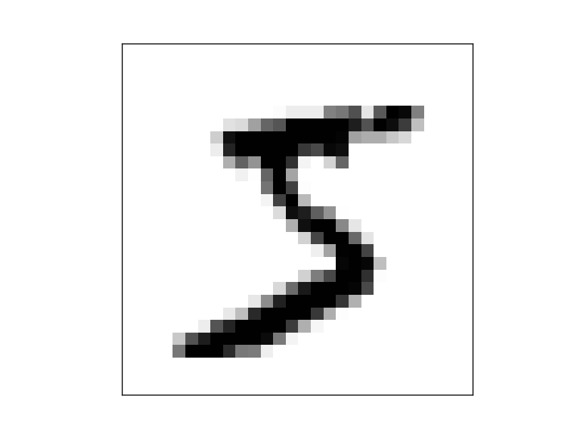
и немного повернём его, скажем, на 15 градусов:
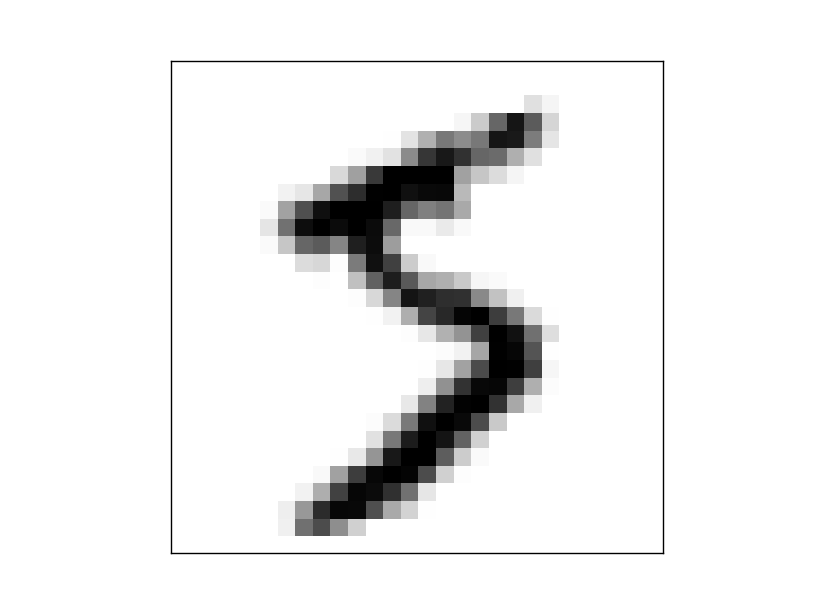
Цифра по-прежнему узнаваема. Но на уровне пикселей изображение сильно отличается от любого изображения, которое сейчас есть в обучающих данных MNIST. Вполне возможно, что добавление этого изображения в обучающие данные поможет сети лучше научиться классифицировать цифры. Более того, мы, очевидно, не ограничены добавлением только этого изображения. Можно расширить обучающие данные, сделав много небольших поворотов всех обучающих изображений MNIST, а затем с помощью расширенных данных улучшить качество сети.
Эта идея очень сильна и широко применяется. Посмотрим на некоторые результаты статьи19, в которой несколько вариантов этой идеи применили к MNIST. Одна из рассмотренных там архитектур похожа на нашу: сеть прямого распространения с 800 скрытыми нейронами и функцией стоимости на основе перекрёстной энтропии. Со стандартными обучающими данными MNIST авторы получили точность классификации 98.4 процента на своём тестовом наборе. Затем они расширили обучающие данные, используя не только повороты, как я описал выше, но и сдвиги и скосы изображений. Обучив сеть на расширенном наборе данных, они подняли её точность до 98.9 процента. Они также экспериментировали с так называемыми «упругими искажениями» — особым видом искажения изображений, имитирующим случайные колебания мышц руки. Расширив данные с помощью упругих искажений, они достигли ещё более высокой точности — 99.3 процента. По сути, они расширяли опыт своей сети, показывая ей такие вариации, которые встречаются в реальном почерке.
Варианты этой идеи помогают улучшить качество во многих задачах обучения, а не только в распознавании почерка. Общий принцип — расширять обучающие данные с помощью операций, отражающих вариативность реального мира. Придумать такие операции нетрудно. Предположим, например, что вы строите нейронную сеть для распознавания речи. Мы, люди, распознаём речь даже при искажениях вроде фонового шума. Значит, можно расширить данные, добавив фоновый шум. Мы также распознаём речь, если её ускорить или замедлить. Это ещё один способ расширить обучающие данные. Эти приёмы используются не всегда: например, вместо того чтобы расширять обучающие данные добавлением шума, вполне может оказаться эффективнее очищать вход сети, предварительно применив фильтр шумоподавления. Тем не менее идею расширения обучающих данных стоит держать в уме и искать возможности её применить.
3.2.3.1 Упражнение
Как обсуждалось выше, один из способов расширить обучающие данные MNIST — небольшие повороты обучающих изображений. Какая проблема может возникнуть, если допустить сколь угодно большие повороты обучающих изображений?
Отступление о больших данных и о том, что значит сравнивать точность классификации. Ещё раз посмотрим, как точность нашей нейронной сети зависит от размера обучающего набора:
Предположим, что вместо нейронной сети мы классифицируем цифры каким-нибудь другим методом машинного обучения. Например, попробуем метод опорных векторов (SVM), с которым мы мельком познакомились ещё в главе 1. Как и в главе 1, не волнуйтесь, если вы не знакомы с SVM, — разбираться в деталях нам не нужно. Мы просто воспользуемся SVM из библиотеки scikit-learn. Вот как качество SVM зависит от размера обучающего набора. Для удобства сравнения я нанёс на график и результаты нейросети20:
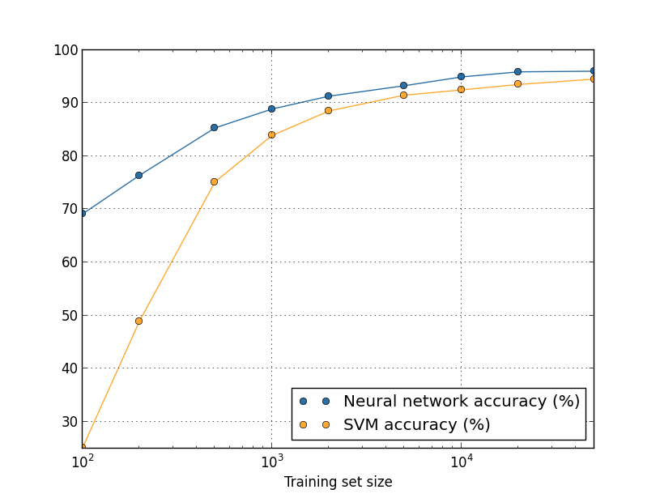
Наверное, первое, что бросается в глаза на этом графике, — наша нейронная сеть превосходит SVM при любом размере обучающего набора. Это приятно, но не стоит придавать этому слишком большое значение: для SVM из scikit-learn я использовал настройки «из коробки», а свою нейронную сеть мы немало улучшали. Более тонкий, но и более интересный факт: если обучить SVM на 50 000 изображений, он работает лучше (точность 94.48 процента), чем наша нейронная сеть, обученная на 5000 изображений (точность 93.24 процента). Иными словами, больший объём обучающих данных иногда может компенсировать разницу в используемых алгоритмах машинного обучения.
Может произойти и нечто ещё более интересное. Предположим, мы решаем задачу двумя алгоритмами машинного обучения, A и B. Иногда бывает, что на одном наборе обучающих данных алгоритм A превосходит B, а на другом — B превосходит A. Выше мы этого не видим — для этого графики должны были бы пересечься, — но так действительно бывает21. Правильный ответ на вопрос «Лучше ли алгоритм A, чем алгоритм B?» на самом деле таков: «А на каком наборе обучающих данных?»
Обо всём этом стоит помнить и при разработке, и при чтении научных статей. Многие статьи посвящены поиску новых трюков, позволяющих выжать лучший результат на стандартных эталонных наборах данных. «Наш суперприём дал улучшение на X процентов на стандартном эталоне Y» — каноническая форма научного утверждения. Такие утверждения часто действительно интересны, но их следует понимать как относящиеся только к конкретному использованному набору обучающих данных. Представьте альтернативную историю, в которой у создателей эталонного набора данных был бы грант побольше. На дополнительные деньги они могли бы собрать больше обучающих данных. Вполне возможно, что «улучшение» от суперприёма исчезло бы на большем наборе данных. Иными словами, заявленное улучшение может оказаться просто случайностью истории. Вывод, особенно для практических приложений, таков: нам нужны и лучшие алгоритмы, и лучшие обучающие данные. Искать лучшие алгоритмы — нормально, но следите, чтобы, сосредоточившись на них, не упустить лёгкие победы, которые даёт получение большего объёма или лучшего качества обучающих данных.
3.2.3.2 Задача
(Исследовательская задача.) Как ведут себя наши алгоритмы машинного обучения в пределе очень больших наборов данных? Для любого алгоритма естественно попытаться определить понятие асимптотического качества в пределе действительно больших данных. Быстрый и грубый подход — просто подгонять кривые к графикам вроде показанных выше, а затем экстраполировать подогнанные кривые на бесконечность. Возражение против этого подхода в том, что разные способы подгонки кривых дадут разные представления об асимптотическом качестве. Можете ли вы найти принципиальное обоснование для подгонки к какому-то определённому классу кривых? Если да, сравните асимптотическое качество нескольких разных алгоритмов машинного обучения.
Итоги. На этом мы завершаем погружение в переобучение и регуляризацию. Конечно, мы ещё вернёмся к этой теме. Как я уже не раз говорил, переобучение — серьёзная проблема нейронных сетей, особенно по мере того, как компьютеры становятся мощнее и мы получаем возможность обучать всё более крупные сети. Поэтому остро необходимы мощные приёмы регуляризации для уменьшения переобучения, и это чрезвычайно активная область современных исследований.
3.3 Инициализация весов
Создавая нейронную сеть, мы должны выбрать начальные веса и смещения. До сих пор мы выбирали их по рецепту, который я лишь кратко обсудил ещё в главе 1. Напомню: этот рецепт состоял в том, чтобы выбирать и веса, и смещения как независимые гауссовы случайные величины, нормированные так, чтобы их среднее было 0, а стандартное отклонение — 1. Хотя этот подход работал хорошо, он был довольно произвольным, и стоит к нему вернуться, чтобы посмотреть, нельзя ли найти лучший способ задавать начальные веса и смещения и, возможно, помочь нашим нейронным сетям учиться быстрее.
Оказывается, можно сделать заметно лучше, чем инициализировать нормированными гауссовыми величинами. Чтобы понять почему, предположим, что мы работаем с сетью, у которой много входных нейронов — скажем, 1000. И пусть веса, ведущие к первому скрытому слою, инициализированы нормированными гауссовыми величинами. Пока я сосредоточусь только на весах связей между входными нейронами и первым нейроном скрытого слоя, а остальную сеть проигнорирую:
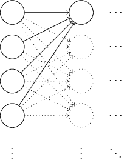
Для простоты предположим, что мы обучаем сеть на обучающем входе \(x\), в котором половина входных нейронов включена, то есть равна 1, а половина выключена, то есть равна 0. Дальнейшее рассуждение применимо и в более общем случае, но суть вы уловите и на этом частном случае. Рассмотрим взвешенную сумму входов нашего скрытого нейрона \(z=\sum_jw_jx_j+b\). 500 слагаемых этой суммы обращаются в ноль, поскольку соответствующий вход \(x_j\) равен нулю. Поэтому \(z\) — сумма в общей сложности 501 нормированной гауссовой случайной величины: 500 весов и одного дополнительного смещения. Значит, \(z\) сама распределена по Гауссу со средним ноль и стандартным отклонением \(\sqrt{501}\approx 22.4\). То есть у \(z\) очень широкое гауссово распределение, вовсе не с острым пиком:
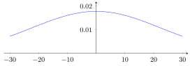
В частности, из графика видно, что весьма вероятно, что \(|z|\) будет довольно большим, то есть либо \(z\gg1\), либо \(z\ll-1\). В этом случае выход скрытого нейрона \(\sigma(z)\) будет очень близок к 1 или к 0. Это значит, что скрытый нейрон насытится. А когда это происходит, как мы знаем, небольшие изменения весов вызывают лишь совершенно ничтожные изменения активации скрытого нейрона. Это ничтожное изменение активации, в свою очередь, почти не повлияет на остальные нейроны сети, и мы увидим соответственно ничтожное изменение функции стоимости. В результате эти веса будут учиться градиентным спуском лишь очень медленно22. Это похоже на проблему, обсуждавшуюся ранее в этой главе, когда выходные нейроны, насыщенные на неправильном значении, замедляли обучение. Ту проблему мы решили хитрым выбором функции стоимости. К сожалению, помогая с насыщенными выходными нейронами, он ничего не даёт для проблемы насыщенных скрытых нейронов.
Я говорил о весах связей, входящих в первый скрытый слой. Конечно, те же рассуждения применимы и к последующим скрытым слоям: если веса последующих скрытых слоёв инициализированы нормированными гауссовыми величинами, активации часто будут очень близки к 0 или 1, и обучение будет идти очень медленно.
Можно ли выбрать лучшую инициализацию весов и смещений, чтобы избежать такого насыщения, а значит, и замедления обучения? Пусть у нас есть нейрон с \(n_\mathrm{in}\) входными весами. Инициализируем эти веса гауссовыми случайными величинами со средним 0 и стандартным отклонением \(1/\sqrt{n_\mathrm{in}}\). То есть мы «сжимаем» гауссовы распределения, снижая вероятность насыщения нейрона. Смещение по-прежнему будем выбирать как гауссову величину со средним 0 и стандартным отклонением 1 — по причинам, к которым я сейчас вернусь. При таком выборе взвешенная сумма \(z=\sum_jw_jx_j+b\) снова будет гауссовой случайной величиной со средним 0, но с гораздо более острым пиком, чем раньше. Пусть, как и прежде, 500 входов равны нулю, а 500 — единице. Тогда легко показать (см. упражнение ниже), что \(z\) распределена по Гауссу со средним 0 и стандартным отклонением \(\sqrt{3/2}=1.22\ldots\). Пик гораздо острее, чем раньше, — настолько, что даже график ниже преуменьшает ситуацию, поскольку по сравнению с предыдущим графиком мне пришлось изменить масштаб вертикальной оси:
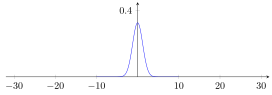
Такой нейрон гораздо реже насыщается, а значит, гораздо реже сталкивается с замедлением обучения.
3.3.1 Упражнение
Проверьте, что стандартное отклонение \(z=\sum_jw_jx_j+b\) в предыдущем абзаце равно \(\sqrt{3/2}\). Полезно знать, что: (a) дисперсия суммы независимых случайных величин равна сумме их дисперсий; (b) дисперсия — это квадрат стандартного отклонения.
Выше я сказал, что смещения мы будем инициализировать по-прежнему — гауссовыми случайными величинами со средним 0 и стандартным отклонением 1. Это допустимо, поскольку не сильно повышает вероятность насыщения нейронов. На самом деле не так уж важно, как инициализировать смещения, если мы избегаем проблемы насыщения. Некоторые даже инициализируют все смещения нулями и полагаются на то, что градиентный спуск выучит подходящие смещения. Но поскольку большой разницы это, скорее всего, не даст, мы продолжим пользоваться прежней процедурой инициализации.
Сравним результаты старого и нового подходов к инициализации весов на задаче классификации цифр MNIST. Как и раньше, возьмём 30 скрытых нейронов, размер мини-пакета 10, параметр регуляризации \(\lambda=5.0\) и функцию стоимости на основе перекрёстной энтропии. Скорость обучения немного уменьшим — с \(\eta=0.5\) до 0.1, — так результаты будет немного лучше видно на графиках. Можно обучить сеть со старым способом инициализации весов:
>>> import mnist_loader
>>> training_data, validation_data, test_data = mnist_loader.load_data_wrapper()
>>> import network2
>>> net = network2.Network([784, 30, 10], cost=network2.CrossEntropyCost)
>>> net.large_weight_initializer()
>>> net.SGD(training_data, 30, 10, 0.1, lmbda = 5.0, evaluation_data=validation_data,
... monitor_evaluation_accuracy=True)А можно — с новым подходом к инициализации весов. Это даже проще,
поскольку network2 по умолчанию инициализирует веса именно
так. Значит, вызов net.large_weight_initializer() выше
можно опустить:
>>> net = network2.Network([784, 30, 10], cost=network2.CrossEntropyCost)
>>> net.SGD(training_data, 30, 10, 0.1, lmbda = 5.0, evaluation_data=validation_data,
... monitor_evaluation_accuracy=True)Построив график результатов23, получим:
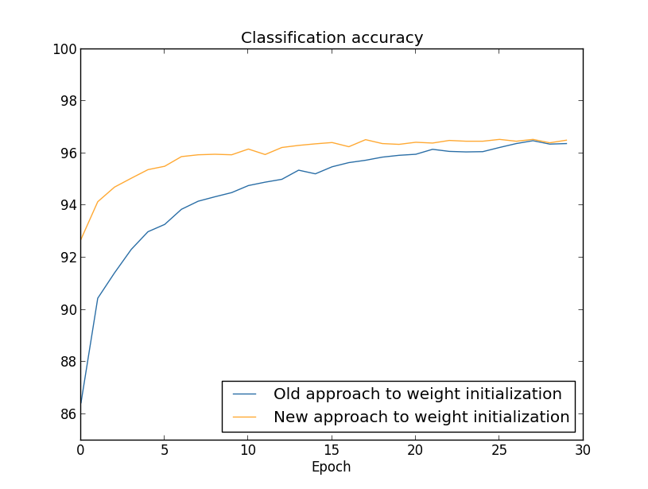
В обоих случаях точность классификации в итоге получается чуть выше 96 процентов. Итоговая точность в двух случаях практически одинакова. Но новый способ инициализации приводит к ней гораздо, гораздо быстрее. В конце первой эпохи обучения при старом подходе точность классификации ниже 87 процентов, а при новом — уже почти 93 процента. По-видимому, новый подход к инициализации весов сразу ставит нас в гораздо более удачный режим, что позволяет гораздо быстрее получить хорошие результаты. То же явление видно и на графике для 100 скрытых нейронов:
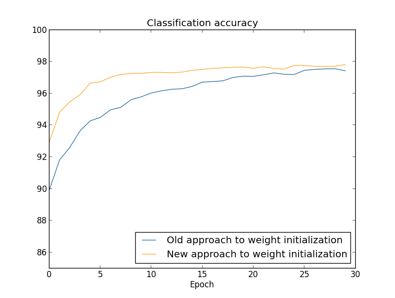
В этом случае две кривые не совсем сходятся. Однако мои эксперименты показывают, что всего через несколько дополнительных эпох обучения (не показаны) точности становятся практически одинаковыми. Так что, судя по этим экспериментам, улучшенная инициализация весов лишь ускоряет обучение, но не меняет итогового качества наших сетей. Однако в главе 4 мы увидим примеры нейронных сетей, у которых при инициализации весов по правилу \(1/\sqrt{n_{\rm in}}\) поведение в долгосрочной перспективе заметно лучше. Так что улучшается не только скорость обучения, но иногда и итоговое качество.
Подход \(1/\sqrt{n_{\rm in}}\) к инициализации весов помогает улучшить обучение наших нейронных сетей. Были предложены и другие приёмы инициализации весов, многие из которых развивают эту базовую идею. Обзор других подходов я здесь приводить не буду, поскольку \(1/\sqrt{n_{\rm in}}\) достаточно хорошо работает для наших целей. Если хотите разобраться глубже, рекомендую обсуждение на страницах 14 и 15 статьи Йошуа Бенжио 2012 года24, а также приведённые там ссылки.
3.3.2 Задача
Связь регуляризации с улучшенным методом инициализации весов. L2-регуляризация иногда автоматически даёт нечто похожее на новый подход к инициализации весов. Пусть мы используем старый подход к инициализации весов. Набросайте эвристическое рассуждение, показывающее, что: (1) если \(\lambda\) не слишком мало, в первые эпохи обучения почти полностью доминирует ослабление весов; (2) при \(\eta\lambda\ll n\) веса за эпоху уменьшаются в \(\exp(-\eta\lambda/m)\) раз; (3) если \(\lambda\) не слишком велико, ослабление весов затухает, когда веса уменьшаются примерно до \(1/\sqrt{n_{\rm in}}\), где \(n\) — общее число весов сети. Покажите, что все эти условия выполняются в примерах, графики которых приведены в этом разделе.
3.4 Снова о распознавании почерка: код
Реализуем идеи, которые мы обсудили в этой главе. Напишем новую
программу network2.py — улучшенную версию программы
network.py из главы 1. Если вы давно не заглядывали в
network.py, возможно, стоит потратить несколько минут и
быстро перечитать её обсуждение. Это всего 74 строки кода, и он легко
читается.
Как и в network.py, главное действующее лицо
network2.py — класс Network, которым мы
представляем нейронные сети. Экземпляр Network
инициализируется списком размеров sizes соответствующих
слоёв сети и выбранной функцией стоимости, по умолчанию — перекрёстной
энтропией:
class Network(object):
def __init__(self, sizes, cost=CrossEntropyCost):
self.num_layers = len(sizes)
self.sizes = sizes
self.default_weight_initializer()
self.cost=costПервые пара строк метода __init__ — такие же, как в
network.py, и говорят сами за себя. А вот две следующие
строки новые, и нужно подробно разобраться, что они делают.
Начнём с метода default_weight_initializer. Он
использует наш новый, улучшенный подход к инициализации весов. Как мы
видели, в этом подходе веса связей, входящих в нейрон, инициализируются
гауссовыми случайными величинами со средним 0 и стандартным отклонением,
равным 1, делённой на квадратный корень из числа входящих в нейрон
связей. В этом же методе мы инициализируем и смещения — гауссовыми
случайными величинами со средним 0 и стандартным отклонением 1. Вот
код:
def default_weight_initializer(self):
self.biases = [np.random.randn(y, 1) for y in self.sizes[1:]]
self.weights = [np.random.randn(y, x)/np.sqrt(x) for x, y in zip(self.sizes[:-1], self.sizes[1:])]Чтобы понять код, полезно вспомнить, что np — это
библиотека Numpy для линейной алгебры. Мы импортируем Numpy в начале
программы. Заметьте также, что для первого слоя нейронов смещения мы не
инициализируем. Мы этого не делаем, поскольку первый слой — входной, и
смещения всё равно не использовались бы. Ровно так же мы поступали в
network.py. В дополнение к
default_weight_initializer добавим метод
large_weight_initializer. Он инициализирует веса и смещения
по-старому, как в главе 1: и веса, и смещения — гауссовыми случайными
величинами со средним 0 и стандартным отклонением 1. Код, конечно, лишь
чуть-чуть отличается от default_weight_initializer:
def large_weight_initializer(self):
self.biases = [np.random.randn(y, 1) for y in self.sizes[1:]]
self.weights = [np.random.randn(y, x) for x, y in zip(self.sizes[:-1], self.sizes[1:])]Метод large_weight_initializer я включил в основном для
удобства — чтобы было проще сравнивать результаты этой главы с
результатами главы 1. Мне трудно представить много практических
ситуаций, в которых я посоветовал бы его использовать!
Второе новшество в методе __init__ класса
Network — теперь мы инициализируем атрибут cost
(стоимость). Чтобы понять, как это работает, посмотрим на класс, которым
мы представляем стоимость на основе перекрёстной энтропии25:
class CrossEntropyCost(object):
@staticmethod
def fn(a, y):
return np.sum(np.nan_to_num(-y*np.log(a)-(1-y)*np.log(1-a)))
@staticmethod
def delta(z, a, y):
return (a-y)Разберём это. Первое, что стоит заметить: хотя перекрёстная энтропия
с математической точки зрения — функция, мы реализовали её как класс
Python, а не как функцию Python. Почему я так сделал? Дело в том, что
стоимость играет в нашей сети две разные роли. Очевидная роль — мера
того, насколько хорошо выходная активация a соответствует
желаемому выходу y. Эту роль выполняет метод
CrossEntropyCost.fn. (Кстати, вызов
np.nan_to_num внутри CrossEntropyCost.fn
гарантирует, что Numpy правильно обрабатывает логарифм чисел, очень
близких к нулю.) Но функция стоимости входит в нашу сеть и вторым
способом. Вспомните из главы 2: при выполнении алгоритма обратного
распространения нужно вычислить ошибку выходного слоя сети \(\delta^L\). Вид этой ошибки зависит от
выбора функции стоимости: другая функция стоимости — другой вид ошибки
выходного слоя. Для перекрёстной энтропии ошибка выходного слоя, как мы
видели в уравнении (66), равна \[\delta^L=a^L-y.\tag{99}\label{eq:99}\]
Поэтому мы определяем второй метод, CrossEntropyCost.delta,
задача которого — сообщить сети, как вычислять ошибку выходного слоя. А
затем объединяем эти два метода в один класс, содержащий всё, что сетям
нужно знать о функции стоимости.
Аналогично в network2.py есть класс, представляющий
квадратичную функцию стоимости. Он включён для сравнения с результатами
главы 1, поскольку дальше мы в основном будем использовать перекрёстную
энтропию. Код приведён ниже. Метод QuadraticCost.fn просто
вычисляет квадратичную стоимость для фактического выхода a
и желаемого выхода y. Значение, возвращаемое
QuadraticCost.delta, основано на выражении (30) для ошибки
выходного слоя при квадратичной стоимости, которое мы вывели ещё в главе
2.
class QuadraticCost(object):
@staticmethod
def fn(a, y):
return 0.5*np.linalg.norm(a-y)**2
@staticmethod
def delta(z, a, y):
return (a-y) * sigmoid_prime(z)Теперь мы разобрались в основных различиях между
network2.py и network.py. Всё это довольно
просто. Есть ещё ряд более мелких изменений, которые я обсужу ниже, в
том числе реализация L2-регуляризации. Но прежде посмотрим на полный код
network2.py. Вчитываться во все детали не обязательно, но
стоит понять общую структуру и, в частности, прочитать строки
документации, чтобы понимать, что делает каждая часть программы.
Конечно, можете погружаться так глубоко, как захотите! Если запутаетесь,
продолжайте читать текст ниже, а к коду вернитесь позже. Итак, вот
код:
"""network2.py
~~~~~~~~~~~~~~
Улучшенная версия network.py, реализующая алгоритм обучения
стохастическим градиентным спуском для нейронной сети прямого
распространения. Среди улучшений - функция стоимости на основе
перекрёстной энтропии, регуляризация и более удачная инициализация
весов сети. Я старался сделать код простым, удобочитаемым и легко
изменяемым. Он не оптимизирован, и в нём нет многих полезных
возможностей.
"""
#### Библиотеки
# Стандартная библиотека
import json
import random
import sys
# Сторонние библиотеки
import numpy as np
#### Квадратичная функция стоимости и перекрёстная энтропия
class QuadraticCost(object):
@staticmethod
def fn(a, y):
"""Возвращает стоимость для выхода ``a`` и желаемого выхода ``y``.
"""
return 0.5*np.linalg.norm(a-y)**2
@staticmethod
def delta(z, a, y):
"""Возвращает ошибку delta выходного слоя."""
return (a-y) * sigmoid_prime(z)
class CrossEntropyCost(object):
@staticmethod
def fn(a, y):
"""Возвращает стоимость для выхода ``a`` и желаемого выхода
``y``. np.nan_to_num используется для численной устойчивости.
В частности, если и в ``a``, и в ``y`` на одной и той же
позиции стоит 1.0, то выражение (1-y)*np.log(1-a) возвращает
nan. np.nan_to_num преобразует его в правильное значение (0.0).
"""
return np.sum(np.nan_to_num(-y*np.log(a)-(1-y)*np.log(1-a)))
@staticmethod
def delta(z, a, y):
"""Возвращает ошибку delta выходного слоя. Параметр ``z`` этим
методом не используется. Он включён в параметры метода, чтобы
интерфейс совпадал с методом delta других классов стоимости.
"""
return (a-y)
#### Основной класс Network
class Network(object):
def __init__(self, sizes, cost=CrossEntropyCost):
"""Список ``sizes`` содержит число нейронов в соответствующих
слоях сети. Например, список [2, 3, 1] задаёт трёхслойную
сеть: 2 нейрона в первом слое, 3 нейрона во втором и 1 нейрон
в третьем. Смещения и веса сети инициализируются случайно
с помощью ``self.default_weight_initializer`` (см. строку
документации этого метода).
"""
self.num_layers = len(sizes)
self.sizes = sizes
self.default_weight_initializer()
self.cost=cost
def default_weight_initializer(self):
"""Инициализирует каждый вес из нормального распределения
со средним 0 и стандартным отклонением 1, делённым на корень
из числа весов, входящих в тот же нейрон. Смещения
инициализируются из нормального распределения со средним 0
и стандартным отклонением 1.
Предполагается, что первый слой - входной, и по соглашению
смещения для его нейронов не задаются, поскольку смещения
используются только при вычислении выходов последующих слоёв.
"""
self.biases = [np.random.randn(y, 1) for y in self.sizes[1:]]
self.weights = [np.random.randn(y, x)/np.sqrt(x) for x, y in zip(self.sizes[:-1], self.sizes[1:])]
def large_weight_initializer(self):
"""Инициализирует веса из нормального распределения со
средним 0 и стандартным отклонением 1. Смещения тоже
инициализируются из нормального распределения со средним 0
и стандартным отклонением 1.
Предполагается, что первый слой - входной, и по соглашению
смещения для его нейронов не задаются, поскольку смещения
используются только при вычислении выходов последующих слоёв.
Этот способ инициализации весов и смещений тот же, что
в главе 1, и включён для сравнения. Обычно лучше
использовать инициализацию по умолчанию.
"""
self.biases = [np.random.randn(y, 1) for y in self.sizes[1:]]
self.weights = [np.random.randn(y, x)
for x, y in zip(self.sizes[:-1], self.sizes[1:])]
def feedforward(self, a):
"""Возвращает выход сети, если на вход подано ``a``."""
for b, w in zip(self.biases, self.weights):
a = sigmoid(np.dot(w, a)+b)
return a
def SGD(self, training_data, epochs, mini_batch_size, eta, lmbda = 0.0, evaluation_data=None, monitor_evaluation_cost=False, monitor_evaluation_accuracy=False, monitor_training_cost=False, monitor_training_accuracy=False):
"""Обучает нейронную сеть стохастическим градиентным спуском
по мини-пакетам. ``training_data`` - список кортежей ``(x, y)``,
представляющих обучающие входы и желаемые выходы. Смысл
остальных обязательных параметров, как и параметра
регуляризации ``lmbda``, очевиден из названий. Метод также
принимает ``evaluation_data`` - обычно проверочные или тестовые
данные. Установив соответствующие флаги, можно следить за
стоимостью и точностью на оценочных или обучающих данных.
Метод возвращает кортеж из четырёх списков: (поэпохальные)
стоимости на оценочных данных, точности на оценочных данных,
стоимости на обучающих данных и точности на обучающих данных.
Все значения вычисляются в конце каждой эпохи обучения.
Например, при обучении в течение 30 эпох первый элемент
кортежа - список из 30 значений стоимости на оценочных данных
в конце каждой эпохи. Если соответствующий флаг не установлен,
список пуст.
"""
if evaluation_data: n_data = len(evaluation_data)
n = len(training_data)
evaluation_cost, evaluation_accuracy = [], []
training_cost, training_accuracy = [], []
for j in xrange(epochs):
random.shuffle(training_data)
mini_batches = [
training_data[k:k+mini_batch_size]
for k in xrange(0, n, mini_batch_size)]
for mini_batch in mini_batches:
self.update_mini_batch(
mini_batch, eta, lmbda, len(training_data))
print "Epoch %s training complete" % j
if monitor_training_cost:
cost = self.total_cost(training_data, lmbda)
training_cost.append(cost)
print "Cost on training data: {}".format(cost)
if monitor_training_accuracy:
accuracy = self.accuracy(training_data, convert=True)
training_accuracy.append(accuracy)
print "Accuracy on training data: {} / {}".format(accuracy, n)
if monitor_evaluation_cost:
cost = self.total_cost(evaluation_data, lmbda, convert=True)
evaluation_cost.append(cost)
print "Cost on evaluation data: {}".format(cost)
if monitor_evaluation_accuracy:
accuracy = self.accuracy(evaluation_data)
evaluation_accuracy.append(accuracy)
print "Accuracy on evaluation data: {} / {}".format(self.accuracy(evaluation_data), n_data)
print
return evaluation_cost, evaluation_accuracy, training_cost, training_accuracy
def update_mini_batch(self, mini_batch, eta, lmbda, n):
"""Обновляет веса и смещения сети, применяя градиентный спуск
с обратным распространением ошибки к одному мини-пакету.
``mini_batch`` - список кортежей ``(x, y)``, ``eta`` - скорость
обучения, ``lmbda`` - параметр регуляризации, ``n`` - полный
размер обучающего набора данных.
"""
nabla_b = [np.zeros(b.shape) for b in self.biases]
nabla_w = [np.zeros(w.shape) for w in self.weights]
for x, y in mini_batch:
delta_nabla_b, delta_nabla_w = self.backprop(x, y)
nabla_b = [nb+dnb for nb, dnb in zip(nabla_b, delta_nabla_b)]
nabla_w = [nw+dnw for nw, dnw in zip(nabla_w, delta_nabla_w)]
self.weights = [(1-eta*(lmbda/n))*w-(eta/len(mini_batch))*nw
for w, nw in zip(self.weights, nabla_w)]
self.biases = [b-(eta/len(mini_batch))*nb
for b, nb in zip(self.biases, nabla_b)]
def backprop(self, x, y):
"""Возвращает кортеж ``(nabla_b, nabla_w)``, представляющий
градиент функции стоимости C_x. ``nabla_b`` и ``nabla_w`` -
списки массивов numpy по слоям, аналогичные ``self.biases``
и ``self.weights``."""
nabla_b = [np.zeros(b.shape) for b in self.biases]
nabla_w = [np.zeros(w.shape) for w in self.weights]
# прямой проход
activation = x
activations = [x] # список для хранения всех активаций, слой за слоем
zs = [] # список для хранения всех векторов z, слой за слоем
for b, w in zip(self.biases, self.weights):
z = np.dot(w, activation)+b
zs.append(z)
activation = sigmoid(z)
activations.append(activation)
# обратный проход
delta = (self.cost).delta(zs[-1], activations[-1], y)
nabla_b[-1] = delta
nabla_w[-1] = np.dot(delta, activations[-2].transpose())
# Обратите внимание: переменная l в цикле ниже используется
# немного иначе, чем в обозначениях главы 2 книги. Здесь
# l = 1 означает последний слой нейронов, l = 2 - предпоследний
# и так далее. Это перенумерация схемы из книги, позволяющая
# воспользоваться тем, что в Python у списков бывают
# отрицательные индексы.
for l in xrange(2, self.num_layers):
z = zs[-l]
sp = sigmoid_prime(z)
delta = np.dot(self.weights[-l+1].transpose(), delta) * sp
nabla_b[-l] = delta
nabla_w[-l] = np.dot(delta, activations[-l-1].transpose())
return (nabla_b, nabla_w)
def accuracy(self, data, convert=False):
"""Возвращает число входов в ``data``, для которых нейронная сеть
выдаёт правильный результат. Выходом сети считается номер
нейрона последнего слоя с наибольшей активацией.
Флаг ``convert`` должен быть False, если набор данных -
проверочные или тестовые данные (обычный случай), и True, если
это обучающие данные. Флаг нужен потому, что результаты ``y``
в разных наборах данных представлены по-разному. Он указывает,
нужно ли преобразовывать одно представление в другое. Может
показаться странным использовать разные представления для
разных наборов данных. Почему бы не использовать одно и то же
для всех трёх? Это сделано ради эффективности: программа обычно
вычисляет стоимость на обучающих данных, а точность - на других
наборах. Это разные виды вычислений, и разные представления
ускоряют работу. Подробнее о представлениях см.
mnist_loader.load_data_wrapper.
"""
if convert:
results = [(np.argmax(self.feedforward(x)), np.argmax(y)) for (x, y) in data]
else:
results = [(np.argmax(self.feedforward(x)), y) for (x, y) in data]
return sum(int(x == y) for (x, y) in results)
def total_cost(self, data, lmbda, convert=False):
"""Возвращает полную стоимость для набора данных ``data``. Флаг
``convert`` должен быть False, если это обучающие данные
(обычный случай), и True, если это проверочные или тестовые
данные. См. комментарий о похожем (но обратном) соглашении для
метода ``accuracy`` выше.
"""
cost = 0.0
for x, y in data:
a = self.feedforward(x)
if convert: y = vectorized_result(y)
cost += self.cost.fn(a, y)/len(data)
cost += 0.5*(lmbda/len(data))*sum(np.linalg.norm(w)**2 for w in self.weights)
return cost
def save(self, filename):
"""Сохраняет нейронную сеть в файл ``filename``."""
data = {"sizes": self.sizes,
"weights": [w.tolist() for w in self.weights],
"biases": [b.tolist() for b in self.biases],
"cost": str(self.cost.__name__)}
f = open(filename, "w")
json.dump(data, f)
f.close()
#### Загрузка сети
def load(filename):
"""Загружает нейронную сеть из файла ``filename``. Возвращает
экземпляр Network.
"""
f = open(filename, "r")
data = json.load(f)
f.close()
cost = getattr(sys.modules[__name__], data["cost"])
net = Network(data["sizes"], cost=cost)
net.weights = [np.array(w) for w in data["weights"]]
net.biases = [np.array(b) for b in data["biases"]]
return net
#### Вспомогательные функции
def vectorized_result(j):
"""Возвращает 10-мерный единичный вектор с 1.0 в позиции j
и нулями в остальных позициях. Используется, чтобы превратить
цифру (0...9) в соответствующий желаемый выход нейронной сети.
"""
e = np.zeros((10, 1))
e[j] = 1.0
return e
def sigmoid(z):
"""Сигмоида."""
return 1.0/(1.0+np.exp(-z))
def sigmoid_prime(z):
"""Производная сигмоиды."""
return sigmoid(z)*(1-sigmoid(z))Одно из самых интересных изменений в коде — добавление
L2-регуляризации. Хотя концептуально это серьёзное изменение,
реализуется оно настолько тривиально, что в коде его легко не заметить.
По большей части это просто передача параметра lmbda в
разные методы, прежде всего в Network.SGD. Настоящая работа
выполняется в одной-единственной строке программы — четвёртой с конца
строке метода Network.update_mini_batch. Именно там мы
изменяем правило обновления градиентного спуска, добавляя ослабление
весов. Изменение крошечное, но на результаты оно влияет сильно!
Кстати, это обычное дело при реализации новых приёмов в нейронных сетях. Мы потратили тысячи слов на обсуждение регуляризации. Концептуально она весьма тонка и трудна для понимания. И всё же добавить её в программу оказалось тривиально! Удивительно часто изощрённые приёмы реализуются небольшими изменениями кода.
Ещё одно небольшое, но важное изменение в коде — несколько
необязательных флагов в методе стохастического градиентного спуска
Network.SGD. Эти флаги позволяют следить за стоимостью и точностью либо
на training_data, либо на наборе
evaluation_data, который можно передать в
Network.SGD. Мы часто пользовались этими флагами ранее в
главе, но на всякий случай приведу пример:
>>> import mnist_loader
>>> training_data, validation_data, test_data = mnist_loader.load_data_wrapper()
>>> import network2
>>> net = network2.Network([784, 30, 10], cost=network2.CrossEntropyCost)
>>> net.SGD(training_data, 30, 10, 0.5, lmbda = 5.0, evaluation_data=validation_data,
... monitor_evaluation_accuracy=True, monitor_evaluation_cost=True, monitor_training_accuracy=True,
... monitor_training_cost=True)Здесь в качестве evaluation_data передаются
validation_data. Но можно было следить за качеством и на
test_data, и на любом другом наборе данных. Кроме того,
четыре флага велят отслеживать стоимость и точность как на
evaluation_data, так и на training_data. По
умолчанию эти флаги равны False, но здесь они включены, чтобы следить за
качеством работы нашей сети Network. Более того, метод
Network.SGD в network2.py возвращает кортеж из
четырёх элементов с результатами наблюдения. Им можно воспользоваться
так:
>>> evaluation_cost, evaluation_accuracy, training_cost, training_accuracy = net.SGD(training_data, 30, 10, 0.5, lmbda = 5.0, evaluation_data=validation_data, monitor_evaluation_accuracy=True, monitor_evaluation_cost=True, monitor_training_accuracy=True, monitor_training_cost=True)Например, evaluation_cost будет списком из 30 элементов
со стоимостью на оценочных данных в конце каждой эпохи. Такая информация
чрезвычайно полезна для понимания поведения сети. Например, по ней можно
строить графики того, как сеть учится со временем. Собственно, именно
так я и построил все графики ранее в главе. Заметьте, однако, что если
какой-то флаг наблюдения не установлен, соответствующий элемент кортежа
будет пустым списком.
Среди других дополнений в коде — метод Network.save,
сохраняющий объекты Network на диск, и функция, загружающая
их обратно. Обратите внимание, что сохранение и загрузка выполняются
через JSON, а не через модули Python pickle или cPickle, которыми обычно
сохраняют и загружают объекты в Python. С JSON кода требуется больше,
чем с pickle или cPickle. Чтобы понять, почему я выбрал JSON,
представьте, что когда-нибудь мы решим изменить класс
Network, чтобы разрешить нейроны, отличные от сигмоидных.
Для этого мы, скорее всего, изменили бы атрибуты, определяемые в методе
Network.__init__. Если бы мы просто сериализовали объекты
через pickle, функция загрузки перестала бы работать. Явная сериализация
через JSON позволяет легко гарантировать, что старые сети по-прежнему
будут загружаться.
В коде network2.py есть и много других мелких изменений,
но все они — простые вариации network.py. В итоге наша
программа из 74 строк превратилась в гораздо более функциональную
программу из 152 строк.
3.4.1 Задачи
Измените приведённый выше код, чтобы реализовать L1-регуляризацию, и с помощью L1-регуляризации классифицируйте цифры MNIST сетью с 30 скрытыми нейронами. Удастся ли найти параметр регуляризации, при котором результат будет лучше, чем без регуляризации?
Посмотрите на метод
Network.cost_derivativeвnetwork.py. Этот метод написан для квадратичной стоимости. Как переписать его для перекрёстной энтропии? Можете ли вы назвать проблему, которая может возникнуть в версии для перекрёстной энтропии? Вnetwork2.pyмы полностью избавились от методаNetwork.cost_derivative, перенеся его функциональность в методCrossEntropyCost.delta. Как это решает обнаруженную вами проблему?
3.5 Как выбирать гиперпараметры нейронной сети?
До сих пор я не объяснял, как выбирал значения гиперпараметров — скорости обучения \(\eta\), параметра регуляризации \(\lambda\) и так далее. Я просто подставлял значения, которые неплохо работают. На практике, когда вы решаете задачу с помощью нейросетей, найти хорошие гиперпараметры бывает трудно. Представьте, например, что мы только что познакомились с задачей MNIST и начали над ней работать, ничего не зная о том, какие гиперпараметры использовать. Предположим, что по счастливой случайности в первых экспериментах мы выбрали многие гиперпараметры так же, как ранее в этой главе: 30 скрытых нейронов, размер мини-пакета 10, обучение в течение 30 эпох с перекрёстной энтропией. Но скорость обучения выбрали \(\eta=10.0\), а параметр регуляризации — \(\lambda=1000.0\). Вот что я увидел в одном таком прогоне:
>>> import mnist_loader
>>> training_data, validation_data, test_data = \
... mnist_loader.load_data_wrapper()
>>> import network2
>>> net = network2.Network([784, 30, 10])
>>> net.SGD(training_data, 30, 10, 10.0, lmbda = 1000.0,
... evaluation_data=validation_data, monitor_evaluation_accuracy=True)
Epoch 0 training complete
Accuracy on evaluation data: 1030 / 10000
Epoch 1 training complete
Accuracy on evaluation data: 990 / 10000
Epoch 2 training complete
Accuracy on evaluation data: 1009 / 10000
...
Epoch 27 training complete
Accuracy on evaluation data: 1009 / 10000
Epoch 28 training complete
Accuracy on evaluation data: 983 / 10000
Epoch 29 training complete
Accuracy on evaluation data: 967 / 10000Точность классификации не лучше случайного угадывания! Наша сеть работает как генератор случайного шума!
«Ну, это легко исправить, — скажете вы, — просто уменьшите скорость обучения и параметр регуляризации». К сожалению, априори вы не знаете, что настраивать нужно именно эти гиперпараметры. Может быть, настоящая проблема в том, что сеть с 30 скрытыми нейронами никогда не будет работать хорошо, как ни выбирай остальные гиперпараметры? Может быть, нам действительно нужно хотя бы 100 скрытых нейронов? Или 300? Или несколько скрытых слоёв? Или другой способ кодирования выхода? Может быть, сеть учится, но обучать её нужно больше эпох? Может быть, мини-пакеты слишком малы? Может, лучше вернуться к квадратичной функции стоимости? Может, нужно попробовать другой подход к инициализации весов? И так далее, и так далее, и так далее. В пространстве гиперпараметров легко заблудиться. Это особенно досадно, если сеть очень большая или использует много обучающих данных: можно обучать её часами, днями или неделями и не получить никакого результата. Если так продолжается, это подрывает вашу уверенность. Может быть, нейронные сети вообще не подходят для вашей задачи? Может, пора уволиться и заняться пчеловодством?
В этом разделе я объясню некоторые эвристики, с помощью которых можно задавать гиперпараметры нейронной сети. Цель — помочь вам выработать порядок работы, позволяющий весьма неплохо подбирать гиперпараметры. Конечно, я не охвачу всего, что касается оптимизации гиперпараметров. Это огромная тема, и в любом случае эта задача никогда не бывает решена полностью, а среди практиков нет единого мнения о правильных стратегиях. Всегда найдётся ещё один трюк, позволяющий выжать из сети ещё немного качества. Но эвристики из этого раздела помогут вам начать.
Общая стратегия. Когда вы применяете нейронные сети к новой задаче, первая трудность — добиться хоть какого-то нетривиального обучения, то есть чтобы сеть показывала результаты лучше случайных. Это может оказаться на удивление трудно, особенно с новым классом задач. Рассмотрим несколько стратегий на случай таких затруднений.
Предположим, например, что вы впервые взялись за MNIST. Вы начинаете с энтузиазмом, но немного падаете духом, когда ваша первая сеть полностью проваливается, как в примере выше. Выход — упростить задачу. Уберите все обучающие и проверочные изображения, кроме нулей и единиц. Затем попробуйте обучить сеть отличать 0 от 1. Это не только изначально более простая задача, чем различение всех десяти цифр, но и сокращение объёма обучающих данных на 80 процентов, что ускоряет обучение в 5 раз. Это позволяет экспериментировать гораздо быстрее и, соответственно, быстрее понять, как построить хорошую сеть.
Можно ещё ускорить эксперименты, упростив сеть до самой простой,
которая, вероятно, способна к осмысленному обучению. Если вы считаете,
что сеть [784, 10], скорее всего, справится с
классификацией цифр MNIST лучше случайного угадывания, начинайте
эксперименты с такой сети. Она обучается гораздо быстрее, чем
[784, 30, 10], а к последней можно вернуться позже.
Ещё одно ускорение экспериментов даёт более частое наблюдение. В
network2.py мы следим за качеством в конце каждой эпохи
обучения. При 50 000 изображений на эпоху это означает, что приходится
немного подождать — на моём ноутбуке около десяти секунд на эпоху при
обучении сети [784, 30, 10], — прежде чем узнать, насколько хорошо
учится сеть. Конечно, десять секунд — не так уж долго, но если хочется
перепробовать десятки вариантов гиперпараметров, это раздражает, а если
сотни или тысячи — начинает изматывать. Обратную связь можно получать
быстрее, проверяя точность на проверочных данных чаще, скажем, после
каждой 1000 обучающих изображений. Более того, вместо полного
проверочного набора из 10 000 изображений можно получить гораздо более
быструю оценку всего по 100 проверочным изображениям. Важно лишь, чтобы
сеть увидела достаточно изображений для настоящего обучения и чтобы
оценка качества была достаточно хорошей, пусть и грубой. Конечно, наша
программа network2.py сейчас так не умеет. Но в качестве
«костыля», чтобы получить похожий эффект для иллюстрации, урежем
обучающие данные до первых 1000 обучающих изображений MNIST. Попробуем и
посмотрим, что получится. (Чтобы код ниже оставался простым, я не стал
реализовывать идею использовать только изображения 0 и 1. Конечно, это
можно сделать, немного потрудившись.)
>>> net = network2.Network([784, 10])
>>> net.SGD(training_data[:1000], 30, 10, 10.0, lmbda = 1000.0, \
... evaluation_data=validation_data[:100], \
... monitor_evaluation_accuracy=True)
Epoch 0 training complete
Accuracy on evaluation data: 10 / 100
Epoch 1 training complete
Accuracy on evaluation data: 10 / 100
Epoch 2 training complete
Accuracy on evaluation data: 10 / 100
...По-прежнему чистый шум! Но есть большой выигрыш: теперь обратная связь приходит за доли секунды, а не раз в десять секунд или около того. Это значит, что можно быстрее пробовать другие варианты гиперпараметров или даже проводить эксперименты сразу со многими вариантами почти одновременно.
В примере выше я оставил \(\lambda\) равным \(\lambda=1000.0\), как раньше. Но поскольку число обучающих примеров изменилось, на самом деле нужно изменить и \(\lambda\), чтобы ослабление весов осталось прежним. Это значит, что \(\lambda\) нужно сделать равным 20.0. Если так сделать, получится вот что:
>>> net = network2.Network([784, 10])
>>> net.SGD(training_data[:1000], 30, 10, 10.0, lmbda = 20.0, \
... evaluation_data=validation_data[:100], \
... monitor_evaluation_accuracy=True)
Epoch 0 training complete
Accuracy on evaluation data: 12 / 100
Epoch 1 training complete
Accuracy on evaluation data: 14 / 100
Epoch 2 training complete
Accuracy on evaluation data: 25 / 100
Epoch 3 training complete
Accuracy on evaluation data: 18 / 100
...Ага! Есть сигнал. Не слишком хороший, но всё-таки сигнал. На этом уже можно строить, меняя гиперпараметры в попытке добиться дальнейшего улучшения. Допустим, мы предполагаем, что скорость обучения нужно увеличить. (Как вы, возможно, понимаете, это глупое предположение — почему, мы скоро обсудим, — но потерпите.) Чтобы проверить догадку, поднимем \(\eta\) до 100.0:
>>> net = network2.Network([784, 10])
>>> net.SGD(training_data[:1000], 30, 10, 100.0, lmbda = 20.0, \
... evaluation_data=validation_data[:100], \
... monitor_evaluation_accuracy=True)
Epoch 0 training complete
Accuracy on evaluation data: 10 / 100
Epoch 1 training complete
Accuracy on evaluation data: 10 / 100
Epoch 2 training complete
Accuracy on evaluation data: 10 / 100
Epoch 3 training complete
Accuracy on evaluation data: 10 / 100
...Плохо! Значит, догадка была неверной, и проблема не в слишком низкой скорости обучения. Попробуем, наоборот, уменьшить \(\eta\) до \(\eta=1.0\):
>>> net = network2.Network([784, 10])
>>> net.SGD(training_data[:1000], 30, 10, 1.0, lmbda = 20.0, \
... evaluation_data=validation_data[:100], \
... monitor_evaluation_accuracy=True)
Epoch 0 training complete
Accuracy on evaluation data: 62 / 100
Epoch 1 training complete
Accuracy on evaluation data: 42 / 100
Epoch 2 training complete
Accuracy on evaluation data: 43 / 100
Epoch 3 training complete
Accuracy on evaluation data: 61 / 100
...
Уже лучше! И так можно продолжать, настраивая гиперпараметры по одному и постепенно улучшая качество. Найдя более удачное значение \(\eta\), переходим к поиску хорошего значения \(\lambda\). Затем экспериментируем с более сложной архитектурой, скажем, с сетью из 10 скрытых нейронов. Затем снова подстраиваем значения \(\eta\) и \(\lambda\). Затем увеличиваем число скрытых нейронов до 20. Потом ещё подстраиваем другие гиперпараметры. И так далее, на каждом этапе оценивая качество по отложенным проверочным данным и используя эти оценки для поиска всё лучших гиперпараметров. По ходу дела эффект от изменения гиперпараметров обычно проявляется всё дольше, так что частоту наблюдения можно постепенно снижать.
Всё это выглядит весьма многообещающе как общая стратегия. Однако я хочу вернуться к той начальной стадии, когда ищутся гиперпараметры, при которых сеть вообще хоть чему-то учится. На самом деле даже приведённое выше обсуждение рисует слишком радужную картину. Работа с сетью, которая ничему не учится, может безмерно раздражать. Можно днями подкручивать гиперпараметры и так и не получить осмысленного отклика. Поэтому ещё раз подчеркну: на ранних этапах позаботьтесь о том, чтобы получать от экспериментов быструю обратную связь. Интуитивно может показаться, что упрощение задачи и архитектуры лишь тормозит работу. На самом деле оно её ускоряет, поскольку гораздо быстрее находится сеть с осмысленным сигналом. А получив такой сигнал, часто можно быстро добиться улучшений, подстраивая гиперпараметры. Как и во многом в жизни, труднее всего бывает начать.
Такова общая стратегия. Теперь рассмотрим конкретные рекомендации по выбору гиперпараметров. Я сосредоточусь на скорости обучения \(\eta\), параметре L2-регуляризации \(\lambda\) и размере мини-пакета. Однако многие замечания относятся и к другим гиперпараметрам, в том числе связанным с архитектурой сети, другими формами регуляризации, а также к некоторым гиперпараметрам, которые мы встретим дальше в книге, например к коэффициенту момента.
Скорость обучения. Предположим, мы запускаем три сети для MNIST с тремя разными скоростями обучения: \(\eta=0.025\), \(\eta=0.25\) и \(\eta=2.5\). Остальные гиперпараметры зададим так же, как в экспериментах предыдущих разделов: 30 эпох, размер мини-пакета 10 и \(\lambda=5.0\). Вернёмся также к полному набору из 50 000 обучающих изображений. Вот график, показывающий поведение стоимости на обучающих данных в ходе обучения26:
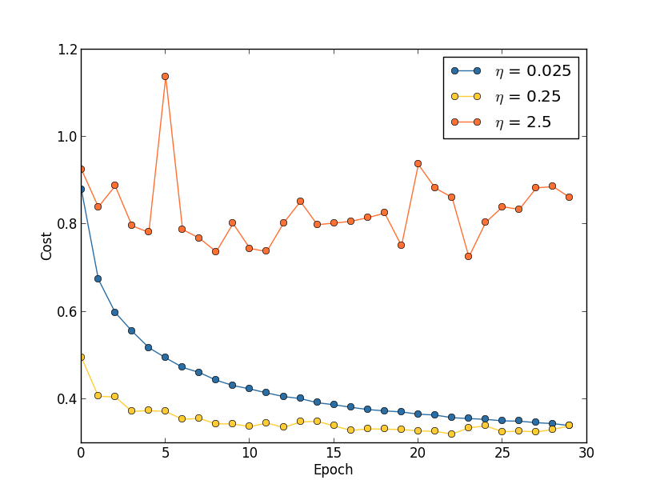
При \(\eta=0.025\) стоимость плавно уменьшается вплоть до последней эпохи. При \(\eta=0.25\) стоимость сначала уменьшается, но примерно после 20 эпох почти насыщается, и дальше в основном видны лишь небольшие, по-видимому случайные колебания. Наконец, при \(\eta=2.5\) стоимость сильно колеблется с самого начала. Чтобы понять причину колебаний, вспомним, что стохастический градиентный спуск должен постепенно спускать нас в долину функции стоимости,
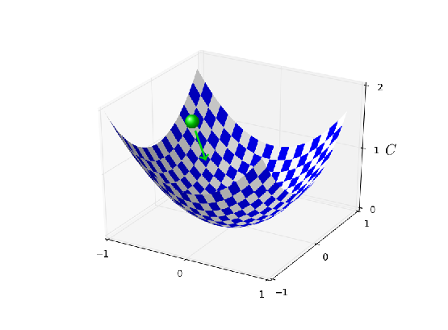
Однако если \(\eta\) слишком велико, шаги будут настолько большими, что могут «перепрыгнуть» минимум, и алгоритм вместо этого начнёт выбираться из долины. Вероятно27, именно это и вызывает колебания стоимости при \(\eta=2.5\). При \(\eta=0.25\) начальные шаги действительно ведут нас к минимуму функции стоимости, и лишь вблизи минимума начинаются проблемы с «перепрыгиванием». А при \(\eta=0.025\) в течение первых 30 эпох этой проблемы нет вовсе. Конечно, столь малое \(\eta\) создаёт другую проблему: оно замедляет стохастический градиентный спуск. Ещё лучше было бы начать с \(\eta=0.25\), обучить 20 эпох, а затем перейти к \(\eta=0.025\). Такие расписания изменения скорости обучения мы обсудим позже. А пока разберёмся, как найти одно хорошее значение скорости обучения \(\eta\).
Держа в уме эту картину, \(\eta\) можно задавать так. Сначала оценим пороговое значение \(\eta\), при котором стоимость на обучающих данных сразу начинает уменьшаться, а не колебаться или расти. Эта оценка не обязана быть очень точной. Порядок величины можно оценить, начав с \(\eta=0.01\). Если в первые несколько эпох стоимость уменьшается, последовательно пробуйте \(\eta=0.1,1.0,\ldots\), пока не найдёте значение \(\eta\), при котором в первые несколько эпох стоимость колеблется или растёт. Если же при \(\eta=0.01\) стоимость в первые несколько эпох колеблется или растёт, пробуйте \(\eta=0.001,0.0001,\ldots\), пока не найдёте значение \(\eta\), при котором стоимость в первые несколько эпох уменьшается. Эта процедура даёт оценку порогового значения \(\eta\) по порядку величины. При желании оценку можно уточнить, выбрав наибольшее значение \(\eta\), при котором стоимость уменьшается в первые несколько эпох, скажем, \(\eta=0.5\) или \(\eta=0.2\) (сверхточность тут не нужна). Это и даёт оценку порогового значения \(\eta\).
Очевидно, реально используемое значение \(\eta\) не должно превышать пороговое. Более того, если значение \(\eta\) должно оставаться пригодным на протяжении многих эпох, то, скорее всего, стоит взять \(\eta\) поменьше — скажем, вдвое ниже порога. Такой выбор обычно позволяет обучать много эпох, не слишком замедляя обучение.
В случае данных MNIST эта стратегия даёт оценку порогового значения \(\eta\) порядка 0.1. После некоторого уточнения получается пороговое значение \(\eta=0.5\). Следуя рецепту выше, это подсказывает использовать в качестве скорости обучения \(\eta=0.25\). На деле я обнаружил, что \(\eta=0.5\) достаточно хорошо работает на протяжении 30 эпох, так что по большей части я не беспокоился о меньшем значении \(\eta\).
Всё это кажется довольно простым. Однако выбор \(\eta\) по стоимости на обучающих данных, похоже, противоречит сказанному ранее в этом разделе: что гиперпараметры мы будем выбирать, оценивая качество на отложенных проверочных данных. На самом деле по точности на проверочных данных мы будем выбирать параметр регуляризации, размер мини-пакета и параметры сети вроде числа слоёв и скрытых нейронов и так далее. Почему же со скоростью обучения поступать иначе? Честно говоря, это моё личное эстетическое предпочтение, и, пожалуй, несколько своеобразное. Рассуждение такое: остальные гиперпараметры призваны повысить итоговую точность классификации на тестовом наборе, поэтому разумно выбирать их по точности на проверочных данных. А скорость обучения влияет на итоговую точность классификации лишь косвенно. Её главная задача — управлять размером шага градиентного спуска, а наблюдение за стоимостью на обучающих данных — лучший способ заметить, что шаг слишком велик. Повторю, это личное эстетическое предпочтение. В начале обучения стоимость на обучающих данных обычно уменьшается, только если растёт точность на проверочных, так что на практике вряд ли важно, каким критерием пользоваться.
Используйте раннюю остановку, чтобы определить число эпох обучения. Как мы обсуждали ранее в главе, ранняя остановка означает, что в конце каждой эпохи мы вычисляем точность классификации на проверочных данных. Когда она перестаёт расти, обучение прекращается. Это делает выбор числа эпох очень простым. В частности, не нужно явно выяснять, как число эпох зависит от остальных гиперпараметров. Об этом позаботятся автоматически. Кроме того, ранняя остановка автоматически защищает от переобучения. Это, конечно, хорошо, хотя на ранних этапах экспериментов бывает полезно отключать раннюю остановку, чтобы видеть признаки переобучения и учитывать их при выборе подхода к регуляризации.
Чтобы реализовать раннюю остановку, нужно точнее сказать, что значит «точность классификации перестала расти». Как мы видели, точность может довольно сильно скакать, даже когда общая тенденция — к улучшению. Если останавливаться при первом же снижении точности, мы почти наверняка остановимся, когда ещё возможны улучшения. Правило получше — прекращать обучение, если лучшая точность классификации долго не улучшается. Предположим, например, что мы работаем с MNIST. Тогда можно решить прекращать обучение, если точность классификации не улучшалась последние десять эпох. Это гарантирует, что мы не остановимся слишком рано из-за невезения при обучении, но и не будем вечно ждать улучшения, которое так и не наступит.
Правило «нет улучшения за десять эпох» хорошо подходит для первоначального исследования MNIST. Однако сети иногда довольно долго «стоят на плато» вблизи какой-то точности классификации, а потом снова начинают улучшаться. Если вы стремитесь к действительно хорошему качеству, правило «нет улучшения за десять» может оказаться слишком агрессивным. В таком случае советую использовать его для первоначальных экспериментов, а по мере того как вы лучше поймёте, как обучается ваша сеть, постепенно переходить к более мягким правилам: «нет улучшения за двадцать», «нет улучшения за пятьдесят» и так далее. Конечно, это добавляет ещё один гиперпараметр, который надо оптимизировать! Но на практике его обычно легко задать так, чтобы получить весьма хорошие результаты. Аналогично в задачах, отличных от MNIST, правило «нет улучшения за десять» может оказаться слишком агрессивным или, наоборот, недостаточно агрессивным — в зависимости от деталей задачи. Однако, немного поэкспериментировав, обычно легко найти вполне хорошую стратегию ранней остановки.
До сих пор в экспериментах с MNIST мы не использовали раннюю
остановку. Причина в том, что мы проводили множество сравнений разных
подходов к обучению. Для таких сравнений полезно использовать одинаковое
число эпох в каждом случае. Тем не менее изменить
network2.py, чтобы реализовать раннюю остановку, вполне
стоит:
3.5.1 Задача
Измените
network2.pyтак, чтобы реализовать раннюю остановку по стратегии «нет улучшения за \(n\) эпох», где \(n\) — настраиваемый параметр.Можете ли вы придумать правило ранней остановки, отличное от «нет улучшения за \(n\)»? В идеале правило должно находить компромисс между высокой точностью на проверочных данных и не слишком долгим обучением. Добавьте своё правило в
network2.pyи проведите три эксперимента, сравнивая точность на проверочных данных и число эпох обучения с правилом «нет улучшения за 10».
Расписание скорости обучения. До сих пор мы держали скорость обучения \(\eta\) постоянной. Однако часто выгодно её менять. В начале обучения веса, скорее всего, сильно ошибочны. Поэтому лучше использовать большую скорость обучения, при которой веса быстро меняются. Позже скорость обучения можно уменьшить, делая всё более тонкую подстройку весов.
Как задавать расписание скорости обучения? Подходов может быть много. Один естественный подход — использовать ту же базовую идею, что и в ранней остановке. Скорость обучения держится постоянной, пока точность на проверочных данных не начнёт ухудшаться. Затем скорость обучения уменьшается на некоторую величину, скажем, в два или в десять раз. Это повторяется многократно, пока, скажем, скорость обучения не станет в 1024 (или 1000) раза ниже начальной. Тогда обучение прекращается.
Переменное расписание может улучшить качество, но оно открывает целый мир возможных вариантов расписания. Эти варианты могут стать головной болью — можно бесконечно оптимизировать расписание обучения. Для первых экспериментов советую использовать одно постоянное значение скорости обучения. Это даст хорошее первое приближение. Позже, если хотите выжать из сети максимум, стоит поэкспериментировать с расписанием обучения в описанном духе28.
3.5.2 Упражнение
Измените
network2.pyтак, чтобы реализовать расписание обучения, которое: уменьшает скорость обучения вдвое всякий раз, когда точность на проверочных данных удовлетворяет правилу «нет улучшения за 10»; и прекращает обучение, когда скорость обучения падает до 1/128 начального значения.
Параметр регуляризации \(\lambda\). Советую начать вообще без регуляризации (\(\lambda=0.0\)) и определить значение \(\eta\), как описано выше. Затем, используя выбранное \(\eta\), можно по проверочным данным подобрать хорошее значение \(\lambda\). Начните с \(\lambda=1.0\)29, а затем увеличивайте или уменьшайте в 10 раз, сколько нужно для улучшения качества на проверочных данных. Найдя хороший порядок величины, можно точнее подстроить значение \(\lambda\). После этого стоит вернуться и заново оптимизировать \(\eta\).
3.5.3 Упражнение
Возникает соблазн использовать градиентный спуск, чтобы выучивать хорошие значения гиперпараметров вроде \(\lambda\) и \(\eta\). Можете ли вы назвать препятствие к использованию градиентного спуска для определения \(\lambda\)? А препятствие к использованию градиентного спуска для определения \(\eta\)?
Как я выбирал гиперпараметры ранее в этой книге. Если вы воспользуетесь рекомендациями этого раздела, то обнаружите, что получаемые значения \(\eta\) и \(\lambda\) не всегда в точности совпадают с использованными мной ранее в книге. Причина в том, что у книги есть ограничения, связанные с повествованием, из-за которых оптимизировать гиперпараметры иногда было непрактично. Вспомните все сравнения разных подходов к обучению, которые мы проводили: квадратичная стоимость против перекрёстной энтропии, старый и новый способы инициализации весов, обучение с регуляризацией и без неё и так далее. Чтобы такие сравнения были осмысленными, я обычно старался держать гиперпараметры одинаковыми для сравниваемых подходов (или соответствующим образом их масштабировать). Конечно, нет никаких причин, чтобы одни и те же гиперпараметры были оптимальными для всех разных подходов к обучению, так что использованные мной гиперпараметры — своего рода компромисс.
В качестве альтернативы этому компромиссу я мог бы до упора оптимизировать гиперпараметры для каждого отдельного подхода к обучению. В принципе это был бы лучший, более честный подход, поскольку тогда мы видели бы лучшее, на что способен каждый подход. Однако мы провели десятки подобных сравнений, и на практике это оказалось слишком затратно в вычислительном отношении. Поэтому я выбрал компромисс: использовать весьма хорошие (но не обязательно оптимальные) значения гиперпараметров.
Размер мини-пакета. Как выбирать размер мини-пакета? Чтобы ответить на этот вопрос, сначала предположим, что мы занимаемся онлайн-обучением, то есть используем мини-пакеты размером 1.
Очевидное опасение насчёт онлайн-обучения: мини-пакеты всего из одного обучающего примера приведут к существенным ошибкам в оценке градиента. Однако на деле эти ошибки оказываются не такой уж проблемой. Причина в том, что отдельные оценки градиента не обязаны быть сверхточными. Нужна лишь достаточно точная оценка, чтобы функция стоимости продолжала в целом уменьшаться. Представьте, что вы пытаетесь добраться до Северного магнитного полюса с кривым компасом, который всякий раз, когда вы на него смотрите, врёт на 10–20 градусов. Если часто останавливаться и сверяться с компасом, а в среднем компас показывает направление правильно, вы прекрасно доберётесь до Северного магнитного полюса.
Исходя из этого рассуждения, кажется, что стоит использовать онлайн-обучение. На самом деле ситуация сложнее. В одной из задач прошлой главы я отмечал, что с помощью матричных приёмов можно вычислять обновление градиента сразу для всех примеров мини-пакета, а не перебирать их в цикле. В зависимости от деталей вашего оборудования и библиотеки линейной алгебры вычислить оценку градиента для мини-пакета размером (например) 100 так может оказаться заметно быстрее, чем вычислять её циклом по 100 обучающим примерам по отдельности. Это может занять (скажем) лишь в 50 раз больше времени, а не в 100.
Поначалу кажется, что это не особенно помогает. Для мини-пакета размером 100 правило обучения для весов выглядит так: \[w \to w' = w-\eta \frac{1}{100} \sum_x \nabla C_x, \tag{100}\label{eq:100}\] где сумма берётся по обучающим примерам мини-пакета. А при онлайн-обучении — \[w \to w' = w-\eta \nabla C_x \tag{101}\label{eq:101}\] Даже если обновление по мини-пакету занимает всего в 50 раз больше времени, онлайн-обучение всё равно кажется предпочтительнее, ведь обновления происходят гораздо чаще. Предположим, однако, что в случае мини-пакета мы увеличили скорость обучения в 100 раз, так что правило обновления принимает вид \[w \rightarrow w' = w-\eta \sum_x \nabla C_x.\tag{102}\label{eq:102}\] Это очень похоже на 100 отдельных шагов онлайн-обучения со скоростью обучения \(\eta\). Но занимает это лишь в 50 раз больше времени, чем один шаг онлайн-обучения. Конечно, это не совсем то же самое, что 100 шагов онлайн-обучения, поскольку в мини-пакете все \(\nabla C_x\) вычисляются для одного и того же набора весов, в отличие от накопительного обучения в онлайн-случае. И всё же вполне вероятно, что использование большего мини-пакета ускорит работу.
С учётом этих факторов выбор наилучшего размера мини-пакета — это компромисс. Слишком маленький — и вы не используете в полной мере преимущества хороших матричных библиотек, оптимизированных под быстрое оборудование. Слишком большой — и веса просто недостаточно часто обновляются. Нужно выбрать компромиссное значение, максимизирующее скорость обучения. К счастью, размер мини-пакета, при котором скорость максимальна, относительно независим от остальных гиперпараметров (кроме общей архитектуры), так что для поиска хорошего размера мини-пакета не нужно сначала оптимизировать эти гиперпараметры. Поэтому разумно взять какие-нибудь приемлемые (не обязательно оптимальные) значения остальных гиперпараметров, а затем попробовать несколько разных размеров мини-пакета, масштабируя \(\eta\), как описано выше. Постройте график точности на проверочных данных в зависимости от времени (именно реального прошедшего времени, а не эпох!) и выберите тот размер мини-пакета, который даёт самое быстрое улучшение качества. Выбрав размер мини-пакета, можно переходить к оптимизации остальных гиперпараметров.
Конечно, как вы наверняка поняли, в нашей работе я такую оптимизацию не проводил. Более того, наша реализация вообще не использует быстрый подход к обновлению по мини-пакету. Почти во всех примерах я просто без комментариев и объяснений использовал мини-пакеты размером 10. Из-за этого мы могли бы ускорить обучение, уменьшив размер мини-пакета. Я этого не делал — отчасти потому, что хотел показать использование мини-пакетов размером больше 1, а отчасти потому, что мои предварительные эксперименты показали, что ускорение было бы довольно скромным. В практических реализациях, однако, мы бы обязательно реализовали быстрый подход к обновлению по мини-пакету, а затем постарались бы оптимизировать размер мини-пакета, чтобы максимизировать общую скорость.
Автоматизированные методы. Я описывал эти эвристики так, будто вы оптимизируете гиперпараметры вручную. Ручная оптимизация — хороший способ прочувствовать, как ведут себя нейронные сети. Однако, что неудивительно, проделана большая работа по автоматизации этого процесса. Распространённый метод — поиск по сетке, систематически перебирающий точки сетки в пространстве гиперпараметров. Обзор как достижений, так и ограничений поиска по сетке (с предложениями легко реализуемых альтернатив) можно найти в статье 2012 года30 Джеймса Бергстры и Йошуа Бенжио. Предложено и много более изощрённых подходов. Не буду делать обзор всей этой работы, но хочу упомянуть особенно многообещающую статью 2012 года, в которой гиперпараметры оптимизировались автоматически с помощью байесовского подхода31. Код из статьи находится в открытом доступе и с некоторым успехом использовался другими исследователями.
Итоги. Следование описанным практическим правилам не даст абсолютно наилучших возможных результатов от вашей нейронной сети. Но, скорее всего, обеспечит хороший старт и основу для дальнейших улучшений. В частности, я обсуждал гиперпараметры в основном по отдельности. На практике между ними есть взаимосвязи. Вы можете поэкспериментировать с \(\eta\), решить, что подобрали его идеально, затем начать оптимизировать \(\lambda\) — и обнаружить, что это сбивает оптимизацию \(\eta\). На практике полезно ходить туда-обратно, постепенно приближаясь к хорошим значениям. Главное — помните, что описанные эвристики — практические правила, а не высеченные в камне законы. Будьте начеку, высматривая признаки того, что что-то не работает, и будьте готовы экспериментировать. В частности, это значит внимательно следить за поведением сети, особенно за точностью на проверочных данных.
Трудность выбора гиперпараметров усугубляется тем, что знания о том, как их выбирать, широко рассеяны по множеству научных статей и программ, а часто существуют лишь в головах отдельных практиков. Есть огромное количество статей с (иногда противоречивыми) рекомендациями о том, как действовать. Однако есть несколько особенно полезных статей, которые обобщают и концентрируют значительную часть этих знаний. В статье Йошуа Бенжио 2012 года32 даны практические рекомендации по использованию обратного распространения и градиентного спуска для обучения нейронных сетей, в том числе глубоких. Бенжио обсуждает многие вопросы гораздо подробнее, чем я, в том числе то, как проводить более систематический поиск гиперпараметров. Ещё одна хорошая статья — статья 1998 года33 Яна Лекуна, Леона Ботту, Женевьевы Орр и Клауса-Роберта Мюллера. Обе статьи вошли в чрезвычайно полезную книгу 2012 года, собравшую множество приёмов, обычно используемых в нейронных сетях34. Книга дорогая, но многие статьи из неё авторы выложили в сеть — надо полагать, с благословения издателя, — и их можно найти поисковиком.
При чтении этих статей и особенно при собственных экспериментах становится ясно одно: оптимизация гиперпараметров — задача, которая никогда не бывает решена до конца. Всегда найдётся ещё один трюк, позволяющий улучшить качество. Среди писателей есть поговорка: книги никогда не заканчивают, их только бросают. То же верно и для оптимизации нейронных сетей: пространство гиперпараметров настолько велико, что оптимизацию никогда по-настоящему не заканчивают — сеть лишь оставляют потомкам. Поэтому ваша цель — выработать порядок работы, позволяющий быстро и весьма неплохо провести оптимизацию, сохраняя возможность попробовать более детальную оптимизацию, если это важно.
Трудности с выбором гиперпараметров заставляют некоторых жаловаться, что нейронные сети требуют много работы по сравнению с другими методами машинного обучения. Я слышал множество вариаций такой жалобы: «Да, хорошо настроенная нейронная сеть может показать на задаче лучший результат. Но я могу попробовать случайный лес [или SVM, или … вставьте свой любимый метод], и он просто работает. У меня нет времени подбирать идеальную нейронную сеть». Конечно, с практической точки зрения хорошо иметь простые в применении методы. Особенно когда вы только начинаете работать над задачей и ещё неясно, может ли машинное обучение вообще помочь её решить. С другой стороны, если важно получить оптимальное качество, вам, возможно, придётся пробовать подходы, требующие более специальных знаний. Хотя было бы прекрасно, если бы машинное обучение всегда было лёгким, нет никаких априорных причин, чтобы оно было тривиально простым.
3.6 Другие приёмы
Каждый из приёмов, разобранных в этой главе, ценно знать сам по себе, но объяснял я их не только поэтому. Важнее познакомить вас с некоторыми проблемами, которые могут возникать в нейронных сетях, и со стилем анализа, помогающим их преодолевать. В некотором смысле мы учились думать о нейронных сетях. В оставшейся части главы я кратко опишу ещё несколько приёмов. Эти наброски менее подробны, чем предыдущие обсуждения, но должны дать некоторое представление о разнообразии приёмов, доступных для работы с нейронными сетями.
3.6.1 Вариации стохастического градиентного спуска
Стохастический градиентный спуск с обратным распространением хорошо послужил нам в задаче классификации цифр MNIST. Однако существует множество других подходов к оптимизации функции стоимости, и иногда они работают лучше стохастического градиентного спуска по мини-пакетам. В этом разделе я опишу два таких подхода: метод на основе гессиана и метод моментов.
Метод на основе гессиана. Начнём с того, что ненадолго отложим нейронные сети в сторону. Рассмотрим абстрактную задачу минимизации функции стоимости \(C\), зависящей от многих переменных \(w=w_1,w_2,\ldots\), так что \(C=C(w)\). По теореме Тейлора функцию стоимости вблизи точки \(w\) можно приблизить так: \[C(w+\Delta w) = C(w) + \sum_j \frac{\partial C}{\partial w_j} \Delta w_j + \frac{1}{2} \sum_{jk} \Delta w_j \frac{\partial^2 C}{\partial w_j \partial w_k} \Delta w_k + \ldots \tag{103}\label{eq:103}\] Это можно переписать компактнее: \[C(w+\Delta w) = C(w) + \nabla C \cdot \Delta w + \frac{1}{2} \Delta w^T H \Delta w + \ldots, \tag{104}\label{eq:104}\] где \(\nabla C\) — обычный вектор градиента, а \(H\) — матрица, называемая матрицей Гессе (гессианом), \(jk\)-й элемент которой равен \(\partial^2C / \partial w_j \partial w_k\). Предположим, что мы приближаем \(C\), отбрасывая слагаемые высших порядков, обозначенные выше через \(\ldots\): \[C(w+\Delta w) \approx C(w) + \nabla C \cdot \Delta w + \frac{1}{2} \Delta w^T H \Delta w. \tag{105}\label{eq:105}\] С помощью математического анализа можно показать, что выражение в правой части минимально35 при \[\Delta w = -H^{-1} \nabla C.\tag{106}\label{eq:106}\] Если (105) — хорошее приближение функции стоимости, то можно ожидать, что переход из точки \(w\) в точку \(w+\Delta w = w-H^{-1} \nabla C\) заметно уменьшит функцию стоимости. Это подсказывает возможный алгоритм минимизации стоимости:
Выбрать начальную точку \(w\).
Перейти из \(w\) в новую точку \(w' = w-H^{-1} \nabla C\), где гессиан \(H\) и \(\nabla C\) вычислены в точке \(w\).
Перейти из \(w'\) в новую точку \(w''=w'-H'^{-1}\nabla'C\), где гессиан \(H'\) и \(\nabla'C\) вычислены в точке \(w'\).
\(\ldots\)
На практике (105) — лишь приближение, и лучше делать шаги поменьше. Для этого будем многократно менять \(w\) на величину \(\Delta w = -\eta H^{-1}\nabla C\), где \(\eta\) называется скоростью обучения.
Такой подход к минимизации функции стоимости называется методом на основе гессиана, или оптимизацией с гессианом. Есть теоретические и эмпирические результаты, показывающие, что методы с гессианом сходятся к минимуму за меньшее число шагов, чем стандартный градиентный спуск. В частности, учитывая информацию об изменениях второго порядка в функции стоимости, подход с гессианом может избежать многих патологий, возникающих в градиентном спуске. Кроме того, существуют версии алгоритма обратного распространения, позволяющие вычислять гессиан.
Если оптимизация с гессианом так хороша, почему мы не используем её в наших нейронных сетях? К сожалению, при множестве желательных свойств у неё есть одно очень нежелательное: её очень трудно применять на практике. Отчасти проблема в огромном размере матрицы Гессе. Пусть у вас нейронная сеть с \(10^7\) весов и смещений. Тогда соответствующая матрица Гессе будет содержать \(10^7\times10^7=10^{14}\) элементов. Это очень много! Из-за этого вычислить \(H^{-1} \nabla C\) на практике чрезвычайно трудно. Однако это не значит, что понимать этот метод бесполезно. На самом деле существует множество вариантов градиентного спуска, вдохновлённых оптимизацией с гессианом, но избегающих проблемы слишком больших матриц. Рассмотрим один из таких приёмов — градиентный спуск с моментом.
Градиентный спуск с моментом. Интуитивно преимущество оптимизации с гессианом в том, что она учитывает не только информацию о градиенте, но и информацию о том, как градиент меняется. Градиентный спуск с моментом основан на похожей интуиции, но обходится без больших матриц вторых производных. Чтобы понять метод моментов, вспомним нашу исходную картину градиентного спуска [gradient_descent] — шарик, скатывающийся в долину. Тогда мы заметили, что градиентный спуск, вопреки названию, лишь отдалённо похож на шарик, падающий на дно долины. Метод моментов изменяет градиентный спуск двумя способами, приближающими его к физической картине. Во-первых, он вводит понятие «скорости» для оптимизируемых параметров. Градиент меняет скорость, а не (напрямую) «положение» — во многом так же, как физические силы меняют скорость и лишь косвенно влияют на положение. Во-вторых, метод моментов вводит своего рода трение, постепенно уменьшающее скорость.
Дадим более точное математическое описание. Введём переменные скорости \(v=v_1,v_2,\ldots\), по одной на каждую соответствующую переменную \(w_j\)36. Затем заменим правило обновления градиентного спуска \(w \to w'= w-\eta \nabla C\) на \[v \to v' = \mu v - \eta \nabla C \tag{107}\label{eq:107}\] \[w \to w' = w + v'.\tag{108}\label{eq:108}\] В этих уравнениях \(\mu\) — гиперпараметр, управляющий величиной затухания, или трения, в системе. Чтобы понять смысл уравнений, полезно сначала рассмотреть случай \(\mu=1\), соответствующий отсутствию трения. В этом случае из уравнений видно, что «сила» \(\nabla C\) теперь меняет скорость \(v\), а скорость управляет скоростью изменения \(w\). Интуитивно мы наращиваем скорость, многократно прибавляя к ней градиентные слагаемые. Это значит, что если градиент несколько шагов обучения подряд направлен (примерно) в одну сторону, можно набрать изрядный разгон в этом направлении. Подумайте, например, что происходит, если мы движемся прямо вниз по склону:
С каждым шагом скорость вниз по склону растёт, так что мы всё быстрее движемся ко дну долины. Благодаря этому метод моментов может работать гораздо быстрее стандартного градиентного спуска. Конечно, проблема в том, что, достигнув дна долины, мы проскочим его. Или, если градиент быстро изменится, мы можем обнаружить, что движемся не в ту сторону. Для этого и нужен гиперпараметр \(\mu\) в (107). Я говорил, что \(\mu\) управляет величиной трения в системе; если точнее, мерой трения следует считать \(1-\mu\). Как мы видели, при \(\mu=1\) трения нет, и скорость полностью определяется градиентом \(\nabla C\). А при \(\mu=0\) трение велико, скорость не может накапливаться, и уравнения (107) и (108) сводятся к обычному уравнению градиентного спуска \(w \to w'=w-\eta \nabla C\). На практике значение \(\mu\) между 0 и 1 позволяет получить значительную часть выгоды от набора скорости, не вызывая проскакивания. Такое значение \(\mu\) можно подобрать по отложенным проверочным данным — так же, как мы подбираем \(\eta\) и \(\lambda\).
До сих пор я избегал называть гиперпараметр \(\mu\). Дело в том, что стандартное название \(\mu\) выбрано неудачно: его называют коэффициентом момента (momentum co-efficient, буквально «коэффициентом импульса»). Это может сбивать с толку, поскольку \(\mu\) вовсе не то же самое, что импульс в физике. Скорее, он гораздо теснее связан с трением. Однако термин «коэффициент момента» широко распространён, так что мы будем им пользоваться.
Приятное свойство метода моментов в том, что добавить момент в реализацию градиентного спуска почти ничего не стоит. Градиенты по-прежнему можно вычислять обратным распространением, как и раньше, и использовать идеи вроде выборки случайных мини-пакетов. Так мы получаем часть преимуществ метода на основе гессиана, используя информацию о том, как меняется градиент. Но без его недостатков и лишь с небольшими изменениями кода. На практике метод моментов широко используется и часто ускоряет обучение.
3.6.1.1 Упражнение
Что пошло бы не так, если бы в методе моментов мы использовали \(\mu>1\)?
Что пошло бы не так, если бы в методе моментов мы использовали \(\mu<0\)?
3.6.1.2 Задача
Добавьте в
network2.pyстохастический градиентный спуск с моментом.
Другие подходы к минимизации функции стоимости. Разработано множество других подходов к минимизации функции стоимости, и единого мнения о том, какой лучше, нет. По мере погружения в нейронные сети стоит разобраться и в других методах: как они работают, каковы их сильные и слабые стороны и как применять их на практике. В статье, которую я упоминал ранее37, описано и сравнивается несколько таких методов, включая метод сопряжённых градиентов и метод BFGS (см. также тесно связанный с ним метод BFGS с ограниченной памятью, известный как L-BFGS). Ещё один метод, недавно показавший многообещающие результаты38, — ускоренный градиент Нестерова, улучшающий метод моментов. Однако во многих задачах обычный стохастический градиентный спуск работает хорошо, особенно с моментом, поэтому до конца книги мы будем придерживаться стохастического градиентного спуска.
Другие модели искусственного нейрона
До сих пор мы строили нейронные сети из сигмоидных нейронов. В принципе сеть из сигмоидных нейронов может вычислить любую функцию. На практике, однако, сети из нейронов других моделей иногда работают лучше сигмоидных. В зависимости от приложения сети на основе таких альтернативных моделей могут учиться быстрее, лучше обобщаться на тестовые данные или и то и другое. Упомяну пару альтернативных моделей нейрона, чтобы дать представление о распространённых вариантах.
Пожалуй, простейший вариант — tanh-нейрон (читается «танч»), в котором сигмоида заменена гиперболическим тангенсом. Выход tanh-нейрона с входом \(x\), вектором весов \(w\) и смещением \(b\) равен \[\tanh(w \cdot x+b), \tag{109}\label{eq:109}\] где \(\tanh\), конечно, — гиперболический тангенс. Оказывается, такой нейрон очень тесно связан с сигмоидным. Чтобы это увидеть, вспомним, что функция tanh определяется как \[\tanh(z) \equiv \frac{e^z-e^{-z}}{e^z+e^{-z}}. \tag{110}\label{eq:110}\] С помощью небольшой алгебры легко проверить, что \[\sigma(z) = \frac{1+\tanh(z/2)}{2},\tag{111}\label{eq:111}\] то есть tanh — просто масштабированная версия сигмоиды. По графику тоже видно, что форма функции tanh такая же, как у сигмоиды:
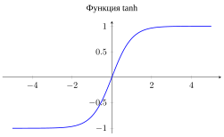
Одно из различий tanh-нейронов и сигмоидных нейронов в том, что выход tanh-нейронов лежит в диапазоне от \(-1\) до 1, а не от 0 до 1. Поэтому, строя сеть на tanh-нейронах, вам, возможно, придётся нормировать выходы (а в зависимости от деталей приложения, возможно, и входы) немного иначе, чем в сигмоидных сетях.
Как и сеть из сигмоидных нейронов, сеть из tanh-нейронов в принципе может вычислить любую функцию39, отображающую входы в диапазон от \(-1\) до 1. Более того, идеи вроде обратного распространения и стохастического градиентного спуска так же легко применяются к сети из tanh-нейронов, как и к сети из сигмоидных нейронов.
3.6.1.3 Упражнение
Докажите тождество из уравнения (111).
Какой тип нейронов использовать в сетях — tanh или сигмоидные? Априори ответ, мягко говоря, неочевиден! Однако есть теоретические аргументы и некоторые эмпирические данные в пользу того, что tanh иногда работает лучше40. Кратко изложу суть одного из теоретических аргументов в пользу tanh-нейронов. Предположим, мы используем сигмоидные нейроны, так что все активации в сети положительны. Рассмотрим веса \(w^{l+1}_{jk}\) связей, входящих в \(j\)-й нейрон \((l+1)\)-го слоя. Правила обратного распространения говорят, что соответствующий градиент равен \(a^l_k\delta^{l+1}_{j}\). Поскольку активации положительны, знак этого градиента совпадает со знаком \(\delta^{l+1}_{j}\). Это значит, что если \(\delta^{l+1}_{j}\) положительно, то все веса \(w^{l+1}_{jk}\) при градиентном спуске уменьшаются, а если \(\delta^{l+1}_{j}\) отрицательно, то все веса \(w^{l+1}_{jk}\) увеличиваются. Иными словами, все веса связей, ведущих к одному нейрону, должны либо вместе расти, либо вместе уменьшаться. Это проблема, поскольку одни веса может быть нужно увеличить, а другие — уменьшить. А это возможно, только если некоторые входные активации имеют разные знаки. Отсюда идея заменить сигмоиду функцией активации, допускающей и положительные, и отрицательные активации, например tanh. Более того, поскольку tanh симметрична относительно нуля, \(\tanh(-z)=-\tanh(z)\), можно даже ожидать, что, грубо говоря, активации в скрытых слоях будут поровну распределены между положительными и отрицательными. Это помогло бы избежать систематического смещения обновлений весов в ту или другую сторону.
Насколько серьёзно следует относиться к этому аргументу? Он наводит на размышления, но это эвристика, а не строгое доказательство того, что tanh-нейроны превосходят сигмоидные. Может быть, у сигмоидного нейрона есть другие свойства, компенсирующие эту проблему? И действительно, во многих задачах эмпирически tanh даёт лишь небольшое улучшение качества по сравнению с сигмоидными нейронами или вообще не даёт. К сожалению, у нас пока нет твёрдых правил, позволяющих узнать, какие типы нейронов будут учиться быстрее всего или лучше всего обобщать в каком-либо конкретном приложении.
Ещё один вариант сигмоидного нейрона — выпрямленный линейный нейрон, или выпрямленный линейный элемент (rectified linear unit, ReLU). Выход выпрямленного линейного нейрона с входом \(x\), вектором весов \(w\) и смещением \(b\) равен \[\max(0, w \cdot x+b). \tag{112}\label{eq:112}\] Графически выпрямляющая функция \(\max(0,z)\) выглядит так:
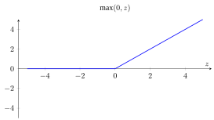
Очевидно, такие нейроны сильно отличаются и от сигмоидных, и от tanh-нейронов. Однако, как и сигмоидные и tanh-нейроны, выпрямленные линейные нейроны можно использовать для вычисления любой функции, и их можно обучать с помощью обратного распространения и стохастического градиентного спуска.
Когда следует использовать выпрямленные линейные нейроны вместо сигмоидных или tanh-нейронов? Ряд недавних работ по распознаванию изображений41 обнаружил существенную пользу от использования выпрямленных линейных нейронов в большей части сети. Однако, как и в случае tanh-нейронов, у нас пока нет по-настоящему глубокого понимания того, когда именно выпрямленные линейные нейроны предпочтительнее и почему. Чтобы дать представление о некоторых вопросах, вспомним, что сигмоидные нейроны перестают учиться при насыщении, то есть когда их выход близок к 0 или 1. Как мы не раз видели в этой главе, проблема в том, что множители \(\sigma'\) уменьшают градиент и это замедляет обучение. Tanh-нейроны страдают от похожей проблемы при насыщении. А вот увеличение взвешенного входа выпрямленного линейного нейрона никогда не приведёт к его насыщению, так что соответствующего замедления обучения нет. С другой стороны, когда взвешенный вход выпрямленного линейного нейрона отрицателен, градиент обращается в ноль, и нейрон полностью перестаёт учиться. Это лишь два из многих вопросов, из-за которых понять, когда и почему выпрямленные линейные нейроны работают лучше сигмоидных или tanh-нейронов, нетривиально.
Я нарисовал здесь картину неопределённости, подчёркивая, что прочной теории выбора функций активации у нас пока нет. На самом деле задача даже сложнее, чем я описал, ведь возможных функций активации бесконечно много. Какая лучше всего подходит для данной задачи? С какой сеть будет учиться быстрее всего? Какая даст наибольшую точность на тестовых данных? Меня удивляет, как мало по-настоящему глубоких и систематических исследований этих вопросов. В идеале у нас была бы теория, подробно говорящая, как выбирать (и, может быть, менять на лету) функции активации. С другой стороны, отсутствие полной теории не должно нас останавливать! У нас уже есть мощные инструменты, и с ними можно продвинуться очень далеко. В оставшейся части книги я продолжу использовать сигмоидные нейроны как основные: они мощны и дают конкретные иллюстрации ключевых идей нейронных сетей. Но держите в уме, что те же идеи применимы и к другим типам нейронов и что иногда это даёт преимущества.
Об историях в нейронных сетях
Вопрос: Как вы подходите к использованию и исследованию методов машинного обучения, обоснованных почти исключительно эмпирически, а не математически? И в каких ситуациях, по вашим наблюдениям, некоторые из этих методов не срабатывают?
Ответ: Нужно понимать, что наши теоретические инструменты очень слабы. Иногда у нас есть хорошая математическая интуиция о том, почему конкретный метод должен работать. Иногда наша интуиция оказывается неверной [...] Вопросы становятся такими: насколько хорошо мой метод работает на этой конкретной задаче и насколько велико множество задач, на которых он работает хорошо.
— Вопрос и ответ с исследователем нейронных сетей Яном Лекуном
Однажды на конференции по основаниям квантовой механики я заметил очень любопытную, как мне показалось, речевую привычку: после докладов вопросы из зала часто начинались словами «Я очень симпатизирую вашей точке зрения, но [...]». Основания квантовой механики не были моей обычной областью, и я обратил внимание на такую манеру задавать вопросы, потому что на других научных конференциях почти никогда не слышал, чтобы спрашивающий выражал симпатию к точке зрения докладчика. Тогда мне показалось, что распространённость таких вопросов говорит о том, что настоящего прогресса в основаниях квантовой механики почти нет и люди просто буксуют на месте. Позже я понял, что эта оценка была слишком суровой. Докладчики бились над одними из труднейших задач, с которыми когда-либо сталкивался человеческий разум. Конечно, прогресс был медленным! Но всё равно было ценно узнавать, как люди думают, даже если им не всегда было что сообщить о бесспорном новом прогрессе.
Возможно, вы заметили в этой книге речевой тик, похожий на «Я очень симпатизирую [...]». Объясняя увиденное, я часто прибегал к словам «Эвристически, [...]» или «Грубо говоря, [...]», за которыми следовала история, объясняющая то или иное явление. Эти истории правдоподобны, но приведённые мной эмпирические свидетельства часто были довольно скудны. Если просмотреть научную литературу, вы увидите, что истории в похожем стиле встречаются во многих статьях о нейронных сетях, часто со скудными подтверждающими данными. Как нам относиться к таким историям?
Во многих областях науки — особенно в тех, что имеют дело с простыми явлениями, — можно получить очень прочные и надёжные свидетельства в пользу весьма общих гипотез. Но в нейронных сетях очень много параметров и гиперпараметров и чрезвычайно сложные взаимодействия между ними. В таких необычайно сложных системах установить надёжные общие утверждения невероятно трудно. Понимание нейронных сетей во всей их общности — задача, которая, как и основания квантовой механики, испытывает пределы человеческого разума. Вместо этого мы часто довольствуемся свидетельствами за или против нескольких конкретных частных случаев общего утверждения. В результате такие утверждения иногда приходится впоследствии менять или отбрасывать, когда появляются новые данные.
На такую ситуацию можно смотреть так: любая эвристическая история о нейронных сетях несёт в себе неявный вызов. Рассмотрим, например, процитированное ранее утверждение, объясняющее, почему работает дропаут42: «Этот приём уменьшает сложные коадаптации нейронов, поскольку нейрон не может полагаться на присутствие конкретных других нейронов. Поэтому он вынужден выучивать более устойчивые признаки, полезные в сочетании со многими различными случайными подмножествами других нейронов». Это богатое, провокационное утверждение, и вокруг одного только его разбора можно было бы построить плодотворную исследовательскую программу: выяснить, что в нём верно, что ложно, что требует изменений и уточнений. И действительно, сейчас существует целая небольшая индустрия исследователей, изучающих дропаут (и множество его вариаций) и пытающихся понять, как он работает и каковы его пределы. Так обстоит дело со многими обсуждавшимися нами эвристиками. Каждая эвристика — не только (потенциальное) объяснение, но и вызов: исследовать и понять её подробнее.
Конечно, ни у одного человека нет времени глубоко исследовать все эти эвристические объяснения. Сообществу исследователей нейронных сетей понадобятся десятилетия (или больше), чтобы выработать по-настоящему мощную, основанную на фактах теорию того, как учатся нейронные сети. Значит ли это, что эвристические объяснения следует отвергать как нестрогие и недостаточно обоснованные? Нет! На самом деле такие эвристики нужны нам, чтобы вдохновлять и направлять мышление. Это похоже на эпоху великих географических открытий: первые исследователи иногда путешествовали (и совершали новые открытия), руководствуясь представлениями, которые были в важных отношениях ошибочны. Позже, по мере пополнения знаний о географии, эти ошибки были исправлены. Когда вы плохо понимаете что-то — как первооткрыватели понимали географию, а мы сегодня понимаем нейронные сети, — смело исследовать важнее, чем быть строго правым на каждом шаге рассуждений. Поэтому эти истории стоит воспринимать как полезный ориентир в том, как думать о нейронных сетях, сохраняя здоровое понимание их ограничений и внимательно следя за тем, насколько сильны свидетельства в пользу каждой линии рассуждений. Иначе говоря, нам нужны хорошие истории, чтобы мотивировать и вдохновлять нас, и строгие глубокие исследования, чтобы выяснить, как обстоит дело на самом деле.